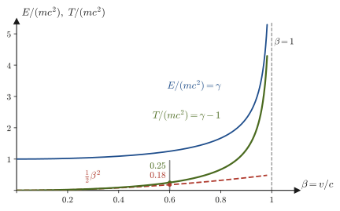
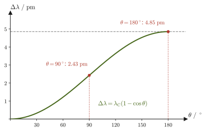

Chapter 57Four-Vectors and Relativistic Dynamics — E=mc² and the Kinematics of Particles
$E=mc^2$ is probably the most famous equation in all of physics. In high school physics, however, although we may hear the words “mass turns into energy,” we are not taught where this equation comes from. In Chapters 54–56 we learned the Lorentz transformation, time dilation, and Minkowski spacetime. What was transformed there was only position and time, that is, “when and where.” But high school physics has other important quantities and laws as well—the momentum $m\bm{v}$, the kinetic energy $\tfrac12mv^2$, conservation of momentum, and conservation of energy. These are formulas that were built under the Galilean transformation for motions sufficiently slow compared with the speed of light, and they cannot be used as they stand for motions close to the speed of light. So what happens to momentum and energy when we rebuild them into the “correct form” under the Lorentz transformation?
The key to this chapter is to treat time and space together as a set of four numbers $(ct,\,x,\,y,\,z)$ (a four-vector). The “length” of a three-dimensional vector does not change when the coordinate axes are rotated. In the same way, a four-vector has a “length” (an invariant) that does not change under a Lorentz transformation. Velocity on the one hand, and momentum and energy on the other, each combine into a four-vector—the momentum turned out to be the spatial components of a four-vector, and the energy its time component. From this viewpoint, $E^2=(pc)^2+(mc^2)^2$ and $E=mc^2$ come out in almost a single line of calculation. Moreover, with just the single law that four-momentum is conserved, problems such as the decay of elementary particles (for example $\pi^+\to\mu^+\nu_\mu$), collisions between particles (how much must a proton be accelerated to produce an antiproton?), and the collision of a photon with an electron (Compton scattering) can be solved as plain algebra.
This chapter serves as a practical toolbox for moving on to the next chapter, Chapter 58 (natural units and the four-vector formulation of electromagnetism), and to relativistic quantum mechanics and particle physics. Many new symbols appear—the superscript and subscript indices in $x^\mu$ and $g_{\mu\nu}$, the Einstein summation convention, and so on—but we explain how to read and use them slowly, together with concrete numerical examples, so please read on without worry. Once you are used to them, the equations become shorter and the overall picture becomes clearer.
- The four-position $x^\mu=(ct,x,y,z)$, the metric $g_{\mu\nu}=\mathrm{diag}(1,-1,-1,-1)$, raising and lowering indices, the inner product (dot product) $a\cdot b$, and the Einstein summation convention
- The matrix $\Lambda^\mu{}_\nu$ of the Lorentz transformation, the condition $\Lambda^{\mathsf T}g\Lambda=g$ under which the inner product is unchanged, the definition of a four-vector, and the Lorentz invariance of the inner product
- The four-velocity $u^\mu=\gamma(c,\bm{v})$ (why we differentiate with respect to the proper time) and the invariant $u\cdot u=c^2$
- The four-momentum $p^\mu=(E/c,\bm{p})$, $E=\gamma mc^2$, $\bm{p}=\gamma m\bm{v}$, and $E^2=(pc)^2+(mc^2)^2$ (the mass-shell condition), and $E=pc$ for a massless particle
- The rest energy $mc^2$ and the kinetic energy $T=(\gamma-1)mc^2$ (which becomes $\tfrac12mv^2$ for $v\ll c$), and the meaning of mass–energy equivalence
- Conservation of four-momentum, the kinematics of two-body decay ($\pi^+\to\mu^+\nu_\mu$, $\pi^0\to\gamma\gamma$, annihilation of an electron–positron pair), invariant mass, threshold energy (production of antiprotons), and Compton scattering
Related notes: Yasuhide Mochizuki, Physics Notes: Special Relativity, pp. 1–9.
57.1 The Four-Position Vector and the Index Convention
First, let us recall rotations in three-dimensional space (University Mathematics, Section 16.4). When the coordinate axes are rotated, the coordinates $(x,y,z)$ of the same point change, but the square of the distance from the origin, $x^2+y^2+z^2$, does not. The Lorentz transformation we derived in Chapter 54 has a corresponding “unchanged quantity” as well. If the coordinates of an event (something that happens at a certain time and place) are $(t,x,y,z)$ in frame S and $(t',x',y',z')$ in frame S′, then
\begin{equation} c^2t^2-x^2-y^2-z^2=c^2t'^2-x'^2-y'^2-z'^2 \label{eq:57-invariant-s2} \end{equation}holds (this is the invariant interval $s^2$ of Section 54.5 and Section 56.4). Just as we handled three-dimensional vectors by using the fact that $x^2+y^2+z^2$ does not change under rotations, we will handle “vectors of spacetime” by using this invariant; this is the starting point of this chapter. To that end, we multiply the time $t$ by the speed of light $c$ to bring it to the dimension of length ($\mathrm{m}$), add the resulting quantity $ct$ as a fourth coordinate, and write the position of an event as a set of four numbers.
Definition 57.1: Four-position vector
The set of four numbers built from the time $t$ and the position $(x,y,z)$ of an event,
\begin{equation} \left(x^0,\,x^1,\,x^2,\,x^3\right)=\left(ct,\,x,\,y,\,z\right) \label{eq:57-4pos} \end{equation}is called the four-position vector or simply the four-vector $x^\mu$. The index $\mu$ (mu) takes the values $0,1,2,3$; we call $x^0=ct$ the time component and $(x^1,x^2,x^3)=(x,y,z)$ the spatial components. We write the triple of spatial components as a three-dimensional vector $\bm{x}$ and also write $x^\mu=(ct,\bm{x})$. All four components have the dimension of length ($\mathrm{m}$).
Caution: The superscript is a component number, not an exponent
The $\mu$ in the superscript of $x^\mu$ is not the exponent of a power but a component number. For example, $x^2$ means not “$x$ squared” but “the second component of the four-position, that is, the coordinate $y$.” When we want to express a power, we put parentheses, as in $(x^1)^2$ and $(x^0)^2$, to avoid confusion. By convention, Greek indices ($\mu,\nu,\rho,\sigma$, read mu, nu, rho, and sigma) run over all of $0,1,2,3$, while Roman indices ($i,j,k$) run over only the spatial components $1,2,3$. Also, the notation $x^\mu$ is used both for “the $\mu$th of the four components” and for “the whole set of four components” (judge from the context).
The reason we take $ct$ rather than $t$ as a component is that $t$ has units of seconds and $x$ has units of meters, so they cannot be added or subtracted as they are (in Eq. \eqref{eq:57-invariant-s2}, $c^2t^2$ and $x^2$ acquire the same unit $\mathrm{m^2}$ only after we multiply by $c$). Light travels about $0.3\ \mathrm{m}$ in $1\ \mathrm{ns}$ ($10^{-9}\ \mathrm{s}$), so a time of $1\ \mathrm{ns}$ is converted into the length $ct\approx0.3\ \mathrm{m}$. This habit of measuring time by “the distance light travels” is the same as taking $ct$ for the vertical axis of the spacetime diagram (Section 56.3).
For two events A and B, the difference of their four-positions $\Delta x^\mu=x_{\mathrm{B}}^\mu-x_{\mathrm{A}}^\mu=(c\Delta t,\Delta\bm{x})$ is called the four-displacement (for two very close points, $\dd x^\mu=(c\,\dd t,\dd\bm{x})$). This too is a set of four components, and it transforms by the same rule as the four-position (Section 57.3).
Example 57.1: Writing a four-position
An event occurred in frame S at time $t=2.0\times10^{-8}\ \mathrm{s}$ and position $(x,y,z)=(3.0,\,4.0,\,0)\ \mathrm{m}$. Write down the four-position $x^\mu$ of this event. Take $c=3.00\times10^8\ \mathrm{m/s}$. Also compare the spatial distance from the origin, $r=\abs{\bm{x}}$, with $ct$.
Solution. The time component is
$$ x^0=ct=\left(3.00\times10^8\ \mathrm{m/s}\right)\left(2.0\times10^{-8}\ \mathrm{s}\right)=6.0\ \mathrm{m} $$(the unit is $\mathrm{m/s}\cdot\mathrm{s}=\mathrm{m}$, a length). The spatial components are $x^1=3.0\ \mathrm{m}$, $x^2=4.0\ \mathrm{m}$, and $x^3=0$, so
$$ x^\mu=(6.0,\ 3.0,\ 4.0,\ 0)\ \mathrm{m} $$The distance from the origin is $r=\sqrt{(3.0)^2+(4.0)^2+0^2}\ \mathrm{m}=5.0\ \mathrm{m}$, and $ct=6.0\ \mathrm{m}$ is the larger. That is, this event lies within the range that light emitted from the origin at $t=0$ must have covered, $6.0\ \mathrm{m}$, by the time $t=2.0\times10^{-8}\ \mathrm{s}$ ($r\lt ct$). Since $r\lt ct$, even an object that travels from the origin at a speed slower than that of light, $r/t=5.0\ \mathrm{m}/(2.0\times10^{-8}\ \mathrm{s})=2.5\times10^{8}\ \mathrm{m/s}\ (\lt c)$, can reach this event. In this case the two events are said to be “timelike separated” (timelike, spacelike, and lightlike separations can be distinguished numerically by the inner product of the next section).
57.2 The Metric and the Inner Product — Raising and Lowering Indices and the Einstein Summation Convention
The inner product of the three-dimensional vectors $\bm{a}=(a^1,a^2,a^3)$ and $\bm{b}=(b^1,b^2,b^3)$ is, as you learned in high school, $\bm{a}\cdot\bm{b}=a^1b^1+a^2b^2+a^3b^3$, in which every term has the sign $+$ (University Mathematics, Section 15.2). This inner product does not change its value when the coordinate axes are rotated. In spacetime, as Eq. \eqref{eq:57-invariant-s2} shows, the combination with mixed signs, “the square of the time component is $+$ and the squares of the spatial components are $-$,” is a quantity that the Lorentz transformation leaves unchanged. We therefore define, for four-vectors of spacetime, an inner product with mixed signs. The table that records this assignment of signs is the metric.
Definition 57.2: Metric and inner product
The metric (also called the metric tensor) $g_{\mu\nu}$ consists of 16 numbers, for $\mu,\nu=0,1,2,3$, and is given by the following diagonal matrix (a tensor is a general name for a quantity that carries several indices; here you may think of it as a $4\times4$ table of numbers):
\begin{equation} \left(g_{\mu\nu}\right)=\begin{pmatrix}1&0&0&0\\0&-1&0&0\\0&0&-1&0\\0&0&0&-1\end{pmatrix}=\mathrm{diag}(1,-1,-1,-1) \label{eq:57-metric} \end{equation}We define the inner product of two four-vectors $a^\mu$ and $b^\mu$ by
\begin{equation} a\cdot b\;=\;\sum_{\mu=0}^{3}\sum_{\nu=0}^{3}g_{\mu\nu}\,a^\mu b^\nu\;=\;a^0b^0-a^1b^1-a^2b^2-a^3b^3\;=\;a^0b^0-\bm{a}\cdot\bm{b} \label{eq:57-dot} \end{equation}Here the $\bm{a}\cdot\bm{b}$ (boldface) in the last equality is the ordinary three-dimensional inner product of the spatial components only. We write the inner product of four-vectors as $a\cdot b$ (lightface) and the inner product of three-dimensional vectors as $\bm{a}\cdot\bm{b}$ (boldface), to tell them apart.
Of the 16 components in Eq. \eqref{eq:57-metric}, only four are not $0$: the diagonal components $g_{00}=1$ and $g_{11}=g_{22}=g_{33}=-1$. The double sum in Eq. \eqref{eq:57-dot} has $4\times4=16$ terms, but the terms with $\mu\neq\nu$ vanish because $g_{\mu\nu}=0$, and only the four terms with $\mu=\nu$ remain. In particular, the inner product of the four-position with itself is
\begin{equation} x\cdot x=\left(x^0\right)^2-\left(x^1\right)^2-\left(x^2\right)^2-\left(x^3\right)^2=c^2t^2-x^2-y^2-z^2 \label{eq:57-xx} \end{equation}which is exactly the invariant $s^2$ of Eq. \eqref{eq:57-invariant-s2} (the square of the invariant interval). In other words, this can be restated as “the quantity unchanged by the Lorentz transformation $=$ the inner product $x\cdot x$ of the four-position.” We summarize the content of this metric with mixed signs in a figure (Figure 57.1).
57.2.1 The Einstein summation convention
Writing $\sum_{\mu=0}^3\sum_{\nu=0}^3$ every time, as in Eq. \eqref{eq:57-dot}, is tedious, so relativity uses a convention of omitting the summation sign. This is called the Einstein summation convention.
Definition 57.3: Einstein summation convention
- If an index with the same letter appears in a single term once as an upper index and once as a lower index, sum over that index from $0$ to $3$ (the summation sign $\sum$ is not written). Such an index is called a dummy index (an index that is contracted), and its letter may be replaced by another letter: $a^\mu b_\mu=a^\nu b_\nu$.
- An index that appears only once in a term is called a free index. In an equation, a free index with the same letter must appear in the same position (upper or lower) on the left-hand side, on the right-hand side, and in each of the terms being added.
- An index with the same letter never appears twice as an upper index, or twice as a lower index, in the same term.
With this convention, the inner product in Eq. \eqref{eq:57-dot} can be written $g_{\mu\nu}a^\mu b^\nu$. Since $\mu$ and $\nu$ each appear once as an upper index and once as a lower index in the expression, both are dummy indices and mean $\sum_\mu\sum_\nu$. Let us write it out explicitly. Since $g_{\mu\nu}$ is $0$ for $\mu\neq\nu$, only the four terms with $\mu=\nu$ remain among the $4\times4=16$ terms, giving
$$ g_{\mu\nu}a^\mu b^\nu=g_{00}a^0b^0+g_{11}a^1b^1+g_{22}a^2b^2+g_{33}a^3b^3=a^0b^0-a^1b^1-a^2b^2-a^3b^3 $$which agrees with Eq. \eqref{eq:57-dot}. An example of a free index appears in the following rule for lowering an index.
Definition 57.4: Covariant components (lowering an index) and inverse metric
From a four-vector $a^\mu$ (upper index; contravariant components), we use the metric to define the components $a_\mu$ with a lower index (covariant components; the difference between contravariant and covariant lies in whether the components change under a Lorentz transformation by $\Lambda$ or by the inverse of $\Lambda$; see Section 57.3) by
\begin{equation} a_\mu=g_{\mu\nu}\,a^\nu \label{eq:57-lower} \end{equation}On the right-hand side, $\nu$ is a dummy index (summed over), and $\mu$ is a free index that appears as a lower index on both sides. Since the metric is given by Eq. \eqref{eq:57-metric}, in components this reads
$$ \left(a_0,\,a_1,\,a_2,\,a_3\right)=\left(a^0,\,-a^1,\,-a^2,\,-a^3\right) $$(the time component is the same, and the spatial components change sign). Conversely, to return from lower to upper indices we use the inverse metric $g^{\mu\nu}$ (the metric with upper indices): $a^\mu=g^{\mu\nu}a_\nu$. For the metric of this book, the numerical values of $g^{\mu\nu}$ are the same as those of $g_{\mu\nu}$, namely $\mathrm{diag}(1,-1,-1,-1)$, and the inverse metric satisfies $g^{\mu\rho}g_{\rho\nu}=\delta^\mu{}_\nu$. Here $\delta^\mu{}_\nu$ is the Kronecker delta (the entries of the identity matrix), which takes the value $1$ when $\mu=\nu$ and $0$ when $\mu\neq\nu$.
Let us first state the motivation for using two kinds of components. As we show in the next section, the upper components are transformed by the Lorentz transformation $\Lambda$, and the lower components by the inverse of $\Lambda$. Therefore, in the contraction $a^\mu b_\mu$ of one upper–lower pair, the effects of the transformation cancel, and the result is a quantity whose value does not change (an invariant). Being able to build invariants automatically is the reason for introducing the raising and lowering of indices.
Using covariant components, the inner product can be written as a single sum:
\begin{equation} a\cdot b=a^\mu b_\mu=a_\mu b^\mu=a^0b_0+a^1b_1+a^2b_2+a^3b_3 \label{eq:57-dot-contract} \end{equation}Indeed, substituting $b_\mu=g_{\mu\nu}b^\nu$ gives $a^\mu b_\mu=g_{\mu\nu}a^\mu b^\nu$, which is the same as Eq. \eqref{eq:57-dot}. Summing over an upper index and a lower index taken as a pair is called contraction. A quantity formed by contraction (a quantity with no indices remaining) does not change its value under the Lorentz transformation, as we show in the next section.
Intuition: Writing it with matrices
Let the four-vector be the column vector $a=(a^0,a^1,a^2,a^3)^{\mathsf T}$ ($\mathsf T$ denotes the transpose) and the metric the $4\times4$ matrix $g$ of Eq. \eqref{eq:57-metric}. Then the inner product can be written $a\cdot b=a^{\mathsf T}g\,b$ (for matrices and determinants, see University Mathematics, Section 8.1). The vector $g\,b$ is the column vector $(b_0,b_1,b_2,b_3)^{\mathsf T}$ of covariant components, and multiplying its components by those of $a$ and adding gives $a^\mu b_\mu$. The ordinary three-dimensional inner product was $\bm{a}^{\mathsf T}I\bm{b}$ ($I$ is the identity matrix), so the spacetime inner product can be viewed as “an inner product with $g$ sandwiched in place of the identity matrix.” Note that $g=\mathrm{diag}(1,-1,-1,-1)$ is a diagonal matrix (a matrix whose entries are all $0$ except for the diagonal ones), and the signs $(+,-,-,-)$ of the diagonal entries determine the character of spacetime (for diagonal matrices and eigenvalues, see University Mathematics, Section 12.3).
Caution: There are two sign conventions for the metric
This book, like the companion volume “Particle Physics” (AD 09), uses $g_{\mu\nu}=\mathrm{diag}(1,-1,-1,-1)$ (the time component is $+$ and the spatial components are $-$). This is called the $(+,-,-,-)$ convention. It is the convention common in textbooks of particle physics and field theory. On the other hand, textbooks of general relativity and the like often use the convention with all the signs reversed, $\mathrm{diag}(-1,1,1,1)$, that is, the $(-,+,+,+)$ convention. The physics is the same with either, but the signs of $x\cdot x$ and $p\cdot p$ are reversed, so when you read another book, first check which convention it uses. Note also that many books write the metric of flat spacetime (the spacetime of special relativity treated in this book) as $\eta_{\mu\nu}$.
Discussion: Is it acceptable for the value of an inner product to be negative or zero?
For a three-dimensional vector, $\bm{a}\cdot\bm{a}$ is $0$ or greater, and it is $0$ only when $\bm{a}=\bm{0}$. But $a\cdot a=(a^0)^2-\abs{\bm{a}}^2$ is positive if $\abs{a^0}\gt\abs{\bm{a}}$, negative if $\abs{a^0}\lt\abs{\bm{a}}$, and, if $\abs{a^0}=\abs{\bm{a}}$, then $a\cdot a=0$ even though $a^\mu\neq0$. This is not a contradiction, because the inner product in spacetime is not a rule for “the square of a length” but a rule for producing an invariant (regard it as the inner product treated in University Mathematics, Section 15.2, generalized to a form with mixed signs). The relation between two events with $x\cdot x\gt0$ is called timelike, that with $x\cdot x\lt0$ spacelike, and that with $x\cdot x=0$ lightlike (Section 56.4). An event that light reaches by traveling from the origin satisfies $x\cdot x=0$.
Example 57.2: Computing the spacetime interval $x\cdot x$ and classifying it
For the four-positions (all in units of $\mathrm{m}$) of the following three events (a)–(c) as seen from the event O at the origin, compute $x\cdot x$ and answer whether each is timelike, spacelike, or lightlike. (a) $(ct,x,y,z)=(5,3,0,0)$, (b) $(3,5,0,0)$, (c) $(5,3,4,0)$.
Solution. Substitute into Eq. \eqref{eq:57-xx}, $x\cdot x=(x^0)^2-(x^1)^2-(x^2)^2-(x^3)^2$.
$$ \begin{aligned} \text{(a)}\quad x\cdot x&=5^2-3^2-0^2-0^2=25-9=16\ \mathrm{m^2}\gt0\quad\text{(timelike)}\\ \text{(b)}\quad x\cdot x&=3^2-5^2-0^2-0^2=9-25=-16\ \mathrm{m^2}\lt0\quad\text{(spacelike)}\\ \text{(c)}\quad x\cdot x&=5^2-3^2-4^2-0^2=25-9-16=0\ \mathrm{m^2}\quad\text{(lightlike)} \end{aligned} $$Cases (a) and (b) differ only by an exchange of components, yet their signs are opposite. The time component and the spatial components are not on the same footing; the metric gives them different signs. Case (c) is a point at distance $\sqrt{3^2+4^2}=5\ \mathrm{m}$ from the origin, and this distance corresponds exactly to the time $ct=5\ \mathrm{m}$ that light needs to travel $5\ \mathrm{m}$, so it is lightlike. The value $x\cdot x=16\ \mathrm{m^2}$ in (a) means that this event is separated from the origin in a timelike way, and that there exists an inertial frame of reference in which these two events appear as two events occurring at the same place (in Example 57.4 of the next section, we will verify that the time interval in that frame is $\sqrt{16}\ \mathrm{m}/c=4\ \mathrm{m}/c$).
Example 57.3: Computing covariant components and the inner product (contraction)
For the four-vectors $a^\mu=(3,1,2,0)$ and $b^\mu=(2,1,0,1)$, find the covariant components $a_\mu$ and $b_\mu$, and compute $a\cdot b$, $a\cdot a$, and $b\cdot b$ in two ways (as $a^\mu b_\mu$ and as $a^0b^0-\bm{a}\cdot\bm{b}$).
Solution. By Eq. \eqref{eq:57-lower}, reversing the signs of the spatial components gives $a_\mu=(3,-1,-2,0)$ and $b_\mu=(2,-1,0,-1)$. The contraction \eqref{eq:57-dot-contract} gives
$$ a\cdot b=a^\mu b_\mu=3\times2+1\times(-1)+2\times0+0\times(-1)=6-1+0+0=5 $$With the other way of writing it, $a^0b^0-\bm{a}\cdot\bm{b}$, the three-dimensional inner product of $\bm{a}=(1,2,0)$ and $\bm{b}=(1,0,1)$ is $1\times1+2\times0+0\times1=1$, so $a\cdot b=3\times2-1=5$, which agrees. In the same way,
$$ a\cdot a=3^2-\left(1^2+2^2+0^2\right)=9-5=4,\qquad b\cdot b=2^2-\left(1^2+0^2+1^2\right)=4-2=2 $$(since $a\cdot a\gt0$, $a$ is a timelike vector).
57.3 The Lorentz Transformation $\Lambda^\mu{}_\nu$ and Four-Vectors
In Section 54.7 of Chapter 54, we wrote the transformation to the frame S′, which moves with speed $v$ in the positive direction of the $x$ axis relative to frame S, as a matrix. In the notation for the four-position $x^\mu=(ct,x,y,z)$, this can be written as
\begin{equation} x'^\mu=\Lambda^\mu{}_\nu\,x^\nu \label{eq:57-lorentz} \end{equation}The right-hand side uses the summation convention and denotes the sum over $\nu$ ($\nu=0,1,2,3$). $\Lambda^\mu{}_\nu$ (lambda, mu, nu) is the same as the $4\times4$ matrix in Section 54.7.1 of Chapter 54 (with its entries written with indices), and the upper index $\mu$ gives the row number and the lower index $\nu$ gives the column number. For a boost in the $x$ direction (the transformation with velocity $\beta=v/c$), the matrix is
\begin{equation} \left(\Lambda^\mu{}_\nu\right)=\begin{pmatrix}\gamma&-\beta\gamma&0&0\\-\beta\gamma&\gamma&0&0\\0&0&1&0\\0&0&0&1\end{pmatrix},\qquad\beta=\frac vc,\quad\gamma=\frac{1}{\sqrt{1-\beta^2}} \label{eq:57-Lambda} \end{equation}For example, writing out the sum for the component with $\mu=0$ gives $x'^0=\Lambda^0{}_0x^0+\Lambda^0{}_1x^1+\Lambda^0{}_2x^2+\Lambda^0{}_3x^3=\gamma x^0-\beta\gamma x^1$, that is, $ct'=\gamma(ct-\beta x)$, which agrees with the Lorentz transformation $t'=\gamma(t-vx/c^2)$ of Chapter 54 with both sides multiplied by $c$. The component with $\mu=1$ is $x'^1=-\beta\gamma x^0+\gamma x^1$, that is, $x'=\gamma(x-vt)$.
57.3.1 The Lorentz transformation does not change the inner product
A three-dimensional rotation matrix $R$ satisfies $R^{\mathsf T}R=I$. This condition is equivalent to saying that “the length $\abs{\bm{r}}$ (the inner product) does not change even after the rotation.” The Lorentz transformation has the same property.
Derivation: Verifying $\Lambda^{\mathsf T}g\Lambda=g$ componentwise (for the $2\times2$ case)
The components $x^2,x^3$ perpendicular to the direction of motion do not change, so it suffices to examine only the $2\times2$ part for $(x^0,x^1)$. Let the $2\times2$ part of the boost \eqref{eq:57-Lambda} be $\Lambda=\begin{pmatrix}\gamma&-\beta\gamma\\-\beta\gamma&\gamma\end{pmatrix}$, and the corresponding part of the metric be $g=\begin{pmatrix}1&0\\0&-1\end{pmatrix}$. First form $g\Lambda$ ($g$ reverses the sign of the second row):
$$ g\Lambda=\begin{pmatrix}1&0\\0&-1\end{pmatrix}\begin{pmatrix}\gamma&-\beta\gamma\\-\beta\gamma&\gamma\end{pmatrix}=\begin{pmatrix}\gamma&-\beta\gamma\\\beta\gamma&-\gamma\end{pmatrix} $$Next, multiply from the left by the transpose of $\Lambda$ (since $\Lambda$ is a symmetric matrix, $\Lambda^{\mathsf T}=\Lambda$):
$$ \Lambda^{\mathsf T}g\Lambda=\begin{pmatrix}\gamma&-\beta\gamma\\-\beta\gamma&\gamma\end{pmatrix}\begin{pmatrix}\gamma&-\beta\gamma\\\beta\gamma&-\gamma\end{pmatrix} =\begin{pmatrix}\gamma^2-\beta^2\gamma^2&-\beta\gamma^2+\beta\gamma^2\\-\beta\gamma^2+\beta\gamma^2&\beta^2\gamma^2-\gamma^2\end{pmatrix} =\begin{pmatrix}\gamma^2(1-\beta^2)&0\\0&-\gamma^2(1-\beta^2)\end{pmatrix} $$Since $\gamma^2(1-\beta^2)=1$, this is equal to $\begin{pmatrix}1&0\\0&-1\end{pmatrix}=g$. Hence the following holds:
\begin{equation} \Lambda^{\mathsf T}g\,\Lambda=g\qquad\text{that is}\qquad g_{\mu\nu}\,\Lambda^\mu{}_\rho\,\Lambda^\nu{}_\sigma=g_{\rho\sigma} \label{eq:57-LgL} \end{equation}The equation in components on the right is the matrix product written in components ($(\Lambda^{\mathsf T}g\Lambda)_{\rho\sigma}=\sum_{\mu,\nu}\Lambda^\mu{}_\rho\,g_{\mu\nu}\,\Lambda^\nu{}_\sigma$).
∎
From this property, the Lorentz transformation can be characterized as “a linear transformation that does not change the inner product \eqref{eq:57-dot} of four-vectors” (just as a rotation is “a linear transformation that does not change the three-dimensional inner product”). Next, let us define four-vectors in general.
Definition 57.5: Four-vectors
A set of four quantities $a^\mu=(a^0,a^1,a^2,a^3)$ that, when the inertial frame is changed from S to S′, transforms by the same rule as the four-position
\begin{equation} a'^\mu=\Lambda^\mu{}_\nu\,a^\nu \label{eq:57-4vec} \end{equation}is called a four-vector (contravariant vector). Under spatial rotations, the spatial components $(a^1,a^2,a^3)$ are assumed to rotate as an ordinary three-dimensional vector, and the time component $a^0$ is assumed not to change.
Mathematically, the set of all ordered quadruples of real numbers forms a four-dimensional linear space (University Mathematics, Section 10.3), and $\Lambda$ is a linear transformation of this space (for the representation matrix, see Section 11.4 of the same book). The four-position $x^\mu$ and the four-displacement $\dd x^\mu$ are four-vectors by definition (since $\Lambda^\mu{}_\nu$ is constant, differences and infinitesimal quantities of $x'^\mu=\Lambda^\mu{}_\nu x^\nu$ transform by the same rule). Merely listing four numbers does not necessarily give a four-vector (in the next section we will see an example in which $(c,\bm{v})$ does not become a four-vector).
Theorem 57.1: Lorentz invariance of the inner product of four-vectors
If $a^\mu$ and $b^\mu$ are four-vectors, the inner product takes the same value whichever inertial frame it is computed in:
\begin{equation} a'\cdot b'=a\cdot b \label{eq:57-invariance} \end{equation}Here $a'\cdot b'=g_{\mu\nu}a'^\mu b'^\nu$ is the inner product computed with the components $a'^\mu$, $b'^\nu$ in frame S′.
Proof
Substituting $a'^\mu=\Lambda^\mu{}_\rho a^\rho$ and $b'^\nu=\Lambda^\nu{}_\sigma b^\sigma$ into $g_{\mu\nu}a'^\mu b'^\nu$ (the indices $\rho,\sigma$ are newly used as dummy indices), we obtain
$$ a'\cdot b'=g_{\mu\nu}\left(\Lambda^\mu{}_\rho a^\rho\right)\left(\Lambda^\nu{}_\sigma b^\sigma\right)=\left(g_{\mu\nu}\Lambda^\mu{}_\rho\Lambda^\nu{}_\sigma\right)a^\rho b^\sigma=g_{\rho\sigma}a^\rho b^\sigma=a\cdot b $$In the third equality we used Eq. \eqref{eq:57-LgL}, $g_{\mu\nu}\Lambda^\mu{}_\rho\Lambda^\nu{}_\sigma=g_{\rho\sigma}$. This proves Eq. \eqref{eq:57-invariance}. (Since the components of $\Lambda$ are numbers, the order of multiplication may be interchanged.)
∎
In particular, setting $a=b=x$ gives $x'\cdot x'=x\cdot x$, that is, Eq. \eqref{eq:57-invariant-s2}, without any new computation. That $\dd x\cdot\dd x=c^2\dd t^2-\dd\bm{x}^2$ is invariant for the coordinate difference $\dd x^\mu$ corresponds to the invariant interval $\dd s^2$ of Chapter 56. A quantity of this kind, in which all indices are contracted (no free index remains) so that it is a single number, is called a Lorentz scalar (Lorentz invariant).
Math Tool: How do lower-index components transform?
The covariant components $a_\mu=g_{\mu\nu}a^\nu$ transform differently from the upper-index components. Let us check this explicitly for a boost in the $x$ direction. Since $a^0=a_0$ and $a^1=-a_1$, from $a'^0=\gamma(a^0-\beta a^1)$ and $a'^1=\gamma(a^1-\beta a^0)$ we obtain
$$ a'_0=a'^0=\gamma\left(a_0+\beta a_1\right),\qquad a'_1=-a'^1=\gamma\left(a_1+\beta a_0\right) $$What was $-\beta$ for the upper-index components has become $+\beta$ for the lower-index components (the same form as the boost in the opposite direction, $\Lambda(-\beta)$). In general, $a'_\mu=(\Lambda^{-1})^\nu{}_\mu\,a_\nu$. We can understand that a contraction of one upper and one lower index, such as $a^\mu b_\mu$, is invariant because the upper-index components transform with $\Lambda$ and the lower-index components with $\Lambda^{-1}$, so that the two cancel each other.
Math Tool: When the direction of motion is not the $x$ axis
When S′ moves relative to S with speed $v$ in an arbitrary direction $\bm{n}=\bm{v}/v$, split the four-vector $a^\mu=(a^0,\bm{a})$ into the component parallel to $\bm{n}$, $a_\parallel=\bm{a}\cdot\bm{n}$, and the perpendicular component $\bm{a}_\perp=\bm{a}-a_\parallel\bm{n}$. The parallel component transforms in the same form as for a boost in the $x$ direction, and the perpendicular component does not change:
$$ a'^0=\gamma\left(a^0-\beta a_\parallel\right),\qquad a'_\parallel=\gamma\left(a_\parallel-\beta a^0\right),\qquad\bm{a}'_\perp=\bm{a}_\perp $$In the examples of this chapter, we usually choose the direction of motion to be the $x$ axis and use Eq. \eqref{eq:57-Lambda}.
Example 57.4: Checking the invariance for a boost with $\beta=0.6$
For the Lorentz transformation with $\beta=0.6$, (a) find $\gamma$ and $\Lambda$, and verify numerically that $\Lambda^{\mathsf T}g\Lambda=g$ (the $2\times2$ part). (b) For the event $x^\mu=(5,3,0,0)\ \mathrm{m}$ of Example 57.2 (a), find the four-position $x'^\mu$ in frame S′ and compute $x'\cdot x'$.
Solution. (a) $\gamma=1/\sqrt{1-0.6^2}=1/\sqrt{0.64}=1/0.8=5/4$ and $\beta\gamma=0.6\times5/4=3/4$, so
$$ \Lambda=\begin{pmatrix}5/4&-3/4\\-3/4&5/4\end{pmatrix},\qquad g\Lambda=\begin{pmatrix}5/4&-3/4\\3/4&-5/4\end{pmatrix} $$ $$ \Lambda^{\mathsf T}g\Lambda=\begin{pmatrix}5/4&-3/4\\-3/4&5/4\end{pmatrix}\begin{pmatrix}5/4&-3/4\\3/4&-5/4\end{pmatrix}=\begin{pmatrix}\frac{25}{16}-\frac{9}{16}&-\frac{15}{16}+\frac{15}{16}\\-\frac{15}{16}+\frac{15}{16}&\frac{9}{16}-\frac{25}{16}\end{pmatrix}=\begin{pmatrix}1&0\\0&-1\end{pmatrix}=g $$(b) By Eq. \eqref{eq:57-lorentz},
$$ x'^0=\gamma\left(x^0-\beta x^1\right)=\frac54\left(5-0.6\times3\right)=\frac54\times3.2=4\ \mathrm{m},\qquad x'^1=\gamma\left(x^1-\beta x^0\right)=\frac54\left(3-0.6\times5\right)=0 $$Since $x'^2=x'^3=0$ remain unchanged, $x'^\mu=(4,0,0,0)\ \mathrm{m}$. The inner product is $x'\cdot x'=4^2-0=16\ \mathrm{m^2}$, which agrees with the value $5^2-3^2=16\ \mathrm{m^2}$ in frame S (Theorem 57.1). In frame S′, this event occurs at the same place as the origin ($x'=0$), later by a time $ct'=4\ \mathrm{m}$. That is, frame S′ is the inertial frame in which the event at the origin and this event occur at the same place, and the time interval $\Delta t'=4\ \mathrm{m}/c$ in that frame is the proper time (as previewed in Example 57.2).
57.4 The Four-Velocity
In high school physics, velocity was $\bm{v}=\dd\bm{x}/\dd t$, the derivative of position with respect to time. We would like to extend this to a four-vector. The first method that comes to mind is to differentiate the four-position $x^\mu$ with respect to time and form $(\dd x^0/\dd t,\ \dd x^i/\dd t)=(c,\ \bm{v})$. However, this is not a four-vector. Let us check. Consider a particle at rest in frame S. For this particle, $(c,\bm{v})=(c,0,0,0)$. Seen from frame S′ ($\beta=0.6$, $\gamma=5/4$), the particle moves with velocity $-0.6c$, so the quantity built in S′ by the same method is $(c,-0.6c,0,0)$. On the other hand, if $(c,0,0,0)$ were a four-vector, then by Eq. \eqref{eq:57-4vec} its components in S′ would have to be $\Lambda(c,0,0,0)^{\mathsf T}=(\gamma c,-\beta\gamma c,0,0)=(1.25c,-0.75c,0,0)$, which does not agree with $(c,-0.6c,0,0)$ (every component differs by the same factor $\gamma=1.25$).
The cause lies in the variable $t$ with respect to which we differentiate. Although $\dd x^\mu$ is a four-vector, $\dd t$ takes a different value for each observer (inertial frame) (time dilation; Section 55.2). If we divide a four-vector by a “quantity that takes the same value in all inertial frames,” it remains a four-vector. So we differentiate with respect to the time ticked by a clock moving along with the particle, that is, the proper time $\tau$ (tau).
The proper time $\tau$ is the one defined in Section 56.5 of Chapter 56 ($\dd\tau=\dd s/c$). Here, using the inner product of four-vectors, we recast the infinitesimal proper time $\dd\tau$ along a world line in the form
\begin{equation} c^2\dd\tau^2=\dd x\cdot\dd x=c^2\dd t^2-\dd\bm{x}^2 \label{eq:57-proper-time} \end{equation}(the relation $\dd s^2=\dd x\cdot\dd x$ of Eq. \eqref{eq:57-xx}). Since $\dd\tau^2$ is written as an inner product of four-vectors, by Theorem 57.1 it takes the same value whichever inertial frame we compute it in (a Lorentz scalar).
Let the speed of the particle be $v=\abs{\bm{v}}=\abs{\dd\bm{x}/\dd t}$. Then $\dd\bm{x}^2=v^2\dd t^2$, so Eq. \eqref{eq:57-proper-time} becomes $c^2\dd\tau^2=c^2\dd t^2(1-v^2/c^2)$, and we obtain
\begin{equation} \dd\tau=\frac{\dd t}{\gamma},\qquad\gamma=\frac{1}{\sqrt{1-v^2/c^2}} \label{eq:57-dtau} \end{equation}Here $\gamma$ is the Lorentz factor determined by the speed of the particle $v$ (the $\gamma$ of the preceding sections was a factor determined by the relative velocity between coordinate frames, but the form of the formula is the same). This is nothing other than the time dilation of Chapter 55: “a moving clock runs slow by a factor of $1/\gamma$.”
Definition 57.6: Four-velocity
The derivative of the four-position of a particle with respect to proper time,
\begin{equation} u^\mu=\diff{x^\mu}{\tau} \label{eq:57-u-def} \end{equation}is called the four-velocity. Its unit is $\mathrm{m/s}$. Since $\dd x^\mu$ is a four-vector and $\dd\tau$ is Lorentz invariant, $u^\mu$ is a four-vector.
Derivation: $u^\mu=\gamma(c,\bm{v})$
By the chain rule, $\dd/\dd\tau=(\dd t/\dd\tau)\,\dd/\dd t$, and from Eq. \eqref{eq:57-dtau} we have $\dd t/\dd\tau=\gamma$. Since the time component is $x^0=ct$,
$$ u^0=\diff{(ct)}{\tau}=c\diff{t}{\tau}=\gamma c $$For the spatial components, regarding $x^i$ ($i=1,2,3$) as functions of $t$, we have $\dd x^i/\dd t=v^i$ (the components of the ordinary velocity), so
$$ u^i=\diff{x^i}{\tau}=\diff{t}{\tau}\diff{x^i}{t}=\gamma\,v^i $$Putting these together,
\begin{equation} u^\mu=\gamma\left(c,\ \bm{v}\right)=\left(\gamma c,\ \gamma v^1,\ \gamma v^2,\ \gamma v^3\right) \label{eq:57-u} \end{equation}∎
Comparing this equation with the $(c,\bm{v})$ we constructed earlier, we see that the only difference is that the whole is multiplied by $\gamma$. For $v\ll c$ we have $\gamma\approx1$, so $u^\mu\approx(c,\bm{v})$; that is, the spatial components become the velocity of high school physics. Also, for a particle (point mass) at rest, $\bm{v}=\bm{0}$ and $\gamma=1$, so
$$ u^\mu=(c,\,0,\,0,\,0) $$holds. Even at rest, the particle can be read as “advancing in the time direction with speed $c$” (its proper time is advancing).
Theorem 57.2: Invariant of the four-velocity
For a particle in any motion whatsoever, the inner product of the four-velocity takes a constant value independent of the speed:
\begin{equation} u\cdot u=c^2 \label{eq:57-uu} \end{equation}Proof (two ways)
(i) Component calculation: Substituting Eq. \eqref{eq:57-u} into the definition of the inner product, Eq. \eqref{eq:57-dot}, we get
$$ u\cdot u=(\gamma c)^2-\gamma^2\bm{v}^2=\gamma^2\left(c^2-v^2\right)=\frac{c^2\left(1-v^2/c^2\right)}{1-v^2/c^2}=c^2 $$(We used $\gamma^2=1/(1-v^2/c^2)$. The unit is $\mathrm{(m/s)^2}$, which matches the unit of the square of a speed.)
(ii) From the definition: Dividing both sides of Eq. \eqref{eq:57-proper-time} by $\dd\tau^2$, we obtain $\dd x\cdot\dd x/\dd\tau^2=c^2$. The left-hand side is $(\dd x^\mu/\dd\tau)(\dd x_\mu/\dd\tau)=u\cdot u$.
∎
As (ii) shows, $u\cdot u=c^2$ is merely a restatement of the definition \eqref{eq:57-proper-time} of proper time. Moreover, since $u\cdot u$ is a Lorentz scalar, once we know that it equals $c^2$ in the rest frame ($u^\mu=(c,0,0,0)$), it is $c^2$ in every inertial frame. The four components $u^0,u^1,u^2,u^3$ are not independent; they are tied together by the relation $(u^0)^2=c^2+\abs{\bm{u}}^2$. Only the three components of the ordinary velocity $\bm{v}$ are independent.
Intuition: Why “differentiate with respect to proper time”?
A world line is a single curve that a particle traces out in spacetime. Positions along the curve can be marked off with a scale given by the time $\tau$ shown by a clock moving along with the particle. Moreover, observers in every inertial frame raise no objection to this scale (because $\tau$ is an invariant). On the other hand, $t$ differs from observer to observer, so the “change of position per unit $t$” looks like a different quantity to each observer. The arrow $u^\mu$ in Figure 57.2 is the tangent vector of the world line, and every observer agrees that it points in “the same direction.” When the observer changes, the slopes of the time axis and the space axis change, and only the values of the components $(u^0,u^1)$ of the arrow change (the Lorentz transformation).
Example 57.5: The four-velocity of a particle moving at $v=0.6c$
For a particle moving in the $x$ direction at $v=0.6c$, find $\gamma$, each component of the four-velocity $u^\mu$, $u\cdot u$, and the time that elapses in frame S during a proper time of $1.0\ \mathrm{s}$ of the particle. Take $c=3.00\times10^8\ \mathrm{m/s}$.
Solution. $\gamma=1/\sqrt{1-0.6^2}=1/0.8=1.25$. From Eq. \eqref{eq:57-u},
$$ u^0=\gamma c=1.25c=3.75\times10^8\ \mathrm{m/s},\qquad u^1=\gamma v=1.25\times0.6c=0.75c=2.25\times10^8\ \mathrm{m/s},\qquad u^2=u^3=0 $$The inner product is $u\cdot u=(1.25c)^2-(0.75c)^2=(1.5625-0.5625)c^2=c^2$, so Eq. \eqref{eq:57-uu} holds. During the proper time $\Delta\tau=1.0\ \mathrm{s}$, a time $\Delta t=\gamma\,\Delta\tau=1.25\ \mathrm{s}$ elapses in frame S ($u^0/c=\dd t/\dd\tau=\gamma$).
Example 57.6: Deriving the velocity addition law from the four-velocity
In frame S, a particle moves in the $x$ direction with speed $u_x=0.8c$. Using the transformation of four-velocities, find the speed $u'_x$ of this particle as seen from frame S′, which moves in the $x$ direction with speed $v=0.6c$ relative to S. (As in Chapter 56, for three-dimensional velocities we write $v$ for the speed of the coordinate frame and $u_x,u'_x$ for the velocity of the particle. These are distinct from the four-velocity $u^\mu$.)
Solution. In S, the four-velocity of the particle is, from $\gamma=1/\sqrt{1-0.8^2}=1/0.6=5/3$, $u^\mu=(5c/3,\ 4c/3,\ 0,\ 0)$ (here $\gamma v=(5/3)\times0.8c=4c/3$). The transformation to S′ is given by Eq. \eqref{eq:57-Lambda} with $\gamma_{\mathrm{S'}}=5/4$, $\beta_{\mathrm{S'}}\gamma_{\mathrm{S'}}=3/4$, so that
$$ u'^0=\frac54\cdot\frac53c-\frac34\cdot\frac43c=\frac{25}{12}c-c=\frac{13}{12}c,\qquad u'^1=-\frac34\cdot\frac53c+\frac54\cdot\frac43c=-\frac54c+\frac53c=\frac{5}{12}c $$Since $u'^1/u'^0=u'_x/c$ (the $\gamma v/(\gamma c)$ of Eq. \eqref{eq:57-u}), we get $u'_x=\dfrac{5/12}{13/12}c=\dfrac{5}{13}c\approx0.385c$. Substituting $u_x=0.8c$ and $v=0.6c$ into the velocity transformation law $u'_x=(u_x-v)/(1-vu_x/c^2)$ of Section 56.1 gives $0.2c/(1-0.48)=0.385c$, which agrees. As a check, $u'\cdot u'=(13/12)^2c^2-(5/12)^2c^2=(169-25)c^2/144=c^2$. Merely by transforming the four-velocity, the velocity addition law comes out automatically as the “ratio $u^1/u^0$.”
Math Tool: Viewing $\Lambda$ and $u^\mu$ through rapidity (Section 56.7)
Using the rapidity $\phi$ introduced in Chapter 56 ($\tanh\phi=\beta$, $\gamma=\cosh\phi$, $\gamma\beta=\sinh\phi$), the $2\times2$ block of the boost in Eq. \eqref{eq:57-Lambda} is $$ \Lambda=\begin{pmatrix}\cosh\phi&-\sinh\phi\\-\sinh\phi&\cosh\phi\end{pmatrix} $$ The four-velocity \eqref{eq:57-u} of a particle moving in the $x$ direction with speed $v=c\tanh\phi$ becomes $u^\mu=\gamma(c,v,0,0)=c\,(\cosh\phi,\ \sinh\phi,\ 0,\ 0)$, and $u\cdot u=c^2(\cosh^2\phi-\sinh^2\phi)=c^2$. This amounts to an alternative proof of Theorem 57.2.
When this particle (rapidity $\phi$) is transformed to frame S′ by the boost $\Lambda(\phi_V)$ of rapidity $\phi_V$, the addition formulas $\cosh\phi\cosh\phi_V-\sinh\phi\sinh\phi_V=\cosh(\phi-\phi_V)$ and $\cosh\phi_V\sinh\phi-\sinh\phi_V\cosh\phi=\sinh(\phi-\phi_V)$ give $u'^\mu=c\,(\cosh(\phi-\phi_V),\ \sinh(\phi-\phi_V),0,0)$. That is, rapidities are simply subtracted. In Example 57.6, $\phi=\tanh^{-1}0.8=\ln3$ and $\phi_V=\tanh^{-1}0.6=\ln2$, so $\phi'=\ln3-\ln2=\ln\tfrac32$ and $u'_x=c\tanh\phi'=c\,\dfrac{3/2-2/3}{3/2+2/3}=\dfrac{5}{13}c$, which agrees with the earlier result.
Example 57.7: Why a photon has no rest frame
What happens if we try to apply the four-velocity $u^\mu=\gamma(c,\bm{v})$ to a photon (mass 0, speed $c$)? How does this correspond to the fact that “a photon has no rest frame”?
Solution. A photon moves at $v=c$, so the denominator of $\gamma=1/\sqrt{1-v^2/c^2}$ becomes $0$, and $u^\mu=\gamma(c,\bm{v})$ is not defined. The cause lies in the proper time. On the world line of a photon, $\dd s^2=c^2\dd t^2-\dd\bm{x}^2=0$, so Eq. \eqref{eq:57-proper-time} gives $\dd\tau=0$; that is, a clock accompanying the photon does not tick, and $\tau$ cannot be used as a scale ($u^\mu=\dd x^\mu/\dd\tau$ would involve division by $0$). Let us take another view. If there were an inertial frame in which the photon appears to be at rest, its four-velocity in that frame would be $(c,0,0,0)$, and we would need $u\cdot u=c^2\gt0$. But on the world line of a photon $\dd x\cdot\dd x=0$, and by Theorem 57.1 this remains $0$ in every inertial frame. This is a contradiction, so there is no inertial frame in which the photon appears to be at rest. This is the mathematical expression of the statement that “a photon has no rest frame.” Therefore, to describe the motion of a photon we need not the four-velocity but the four-momentum of the next section (a quantity in which the product of the mass $m\to0$ and $\gamma\to\infty$ remains finite).
57.5 The Four-Momentum and $E^2=(pc)^2+(mc^2)^2$
The momentum $\bm{p}=m\bm{v}$ of high school physics (and of Chapter 2) was a conserved quantity in Newtonian mechanics. However, once the transformation law for velocities between inertial frames changes from the Galilean transformation $\bm{v}'=\bm{v}-\bm{V}$ to the velocity addition law of the Lorentz transformation (Example 57.6), the relation “the total of $m\bm{v}$ is the same before and after a collision” can hold in one inertial frame and yet fail in another. To rescue the law of conservation of momentum as a law that holds simultaneously in all inertial frames, it suffices to rebuild momentum as “part of a quantity that transforms as a four-vector under the Lorentz transformation.” If we multiply the four-velocity $u^\mu$ of the previous section by an invariant quantity that expresses a property of the particle—the rest mass $m$—we obtain a four-vector in a natural way.
Definition 57.7: Four-momentum
The four-momentum of a particle of mass $m$ is defined by
\begin{equation} p^\mu=m\,u^\mu=\left(\gamma mc,\ \gamma m\bm{v}\right) \label{eq:57-p-def} \end{equation}Here $m$ is the mass measured by an observer moving with the particle (in the rest frame), that is, the rest mass, which is a constant for each particle and does not depend on the inertial frame. $\gamma=1/\sqrt{1-v^2/c^2}$ is a factor determined by the particle's speed $v$. Writing the time component as $p^0=E/c$ and the spatial component as $\bm{p}$, we set
\begin{equation} p^\mu=\left(\frac{E}{c},\ \bm{p}\right),\qquad E=\gamma mc^2,\qquad\bm{p}=\gamma m\bm{v} \label{eq:57-p} \end{equation}We call $E$ the total energy (or simply the energy) and $\bm{p}$ the relativistic momentum.
We write $p^0=E/c$ (the energy divided by $c$) so that the four components have the same units (the unit of $E/c$ is $\mathrm{J/(m/s)}=\mathrm{kg\,m/s}$, the same as that of momentum). Let us see whether $\bm{p}=\gamma m\bm{v}$ really connects with the momentum of high school physics. For $v\ll c$ we have $\gamma\approx1$, so $\bm{p}\approx m\bm{v}$, which agrees with the momentum we have used so far. As for the time component $E$, in the next section, Section 57.6, we will show that $\gamma mc^2\approx mc^2+\tfrac12mv^2$ and connect it with the kinetic energy (Chapter 4).
Intuition: Conservation of four-momentum $=$ “conservation of energy $+$ conservation of momentum”
Since the four-momentum $p^\mu$ is a four-vector, if we write its conservation law in some inertial frame as $\sum p^\mu_{\text{before}}=\sum p^\mu_{\text{after}}$, then in another inertial frame the equation obtained by applying the Lorentz transformation $\Lambda$ to both sides, $\sum p'^\mu_{\text{before}}=\sum p'^\mu_{\text{after}}$, holds automatically ($\Lambda$ is linear, so it does not matter whether it is applied before or after summing). The time-component equation $\sum E_{\text{before}}=\sum E_{\text{after}}$ is the “law of conservation of energy,” and the spatial-component equation $\sum\bm{p}_{\text{before}}=\sum\bm{p}_{\text{after}}$ is the “law of conservation of momentum”; these two are separate components of a single four-vector equation. For the statement “if the laws of conservation of energy and of momentum hold in one inertial frame, they hold in all inertial frames” to be true, energy and momentum must be bundled together into a single four-vector $p^\mu$. This is why momentum is defined as $\gamma m\bm{v}$ rather than $m\bm{v}$ (a numerical example is in the next box; see Section 57.7 for details).
Discussion: Three reasons we may call $E$ the “total energy”
Definition 57.7 declared that momentum is $\gamma m\bm{v}$ rather than $m\bm{v}$, and that the $E$ in the time component $p^0=E/c$ is to be called the total energy. That this is a legitimate identification and not a mere relabeling rests on the following three grounds.
- (a) For $v\ll c$, $E=\gamma mc^2\approx mc^2+\tfrac12mv^2$, which reduces to the kinetic energy $\tfrac12mv^2$ of Chapter 4 (apart from the constant $mc^2$) (Sections 57.5.2 and 57.6.1).
- (b) From the equation of motion $\dd\bm{p}/\dd t=\bm{F}$ one derives $\dd E/\dd t=\bm{F}\cdot\bm{v}$ (the power delivered by the force) (Section 57.6.1).
- (c) Because $p^\mu$ is a four-vector, its conservation law holds simultaneously in all inertial frames. The conservation law for $m\bm{v}$ does not have this property.
Let us look at (c) through a concrete example. Two particles A and B of mass $m$ collide head-on in an inertial frame S (the center-of-mass frame), each with speed $0.6c$, and stick together to form a single lump at rest. In S, the velocity of A is $+0.6c$ and that of B is $-0.6c$, so the sum of the momenta of the $m\bm{v}$ type is $m(0.6c)+m(-0.6c)=0$ before the collision and $0$ after it (at rest) as well; it is conserved.
Next, we view the same collision from an inertial frame S′ that moves relative to S at $0.6c$ in the $+x$ direction. In S′, A appears to be at rest, and by the velocity addition law (the same calculation as in Example 57.6) the velocity of B is $v_{\mathrm B}'=(-0.6c-0.6c)/(1+0.36)=-15c/17\approx-0.882c$, and the lump after the collision moves at $-0.6c$.
- $m\bm{v}$ type: before the collision, $m\cdot0+m(-15c/17)\approx-0.882\,mc$. After the collision, if the mass is conserved at $2m$ as in Newtonian mechanics, we get $2m(-0.6c)=-1.2\,mc$. The two values do not agree. The conservation law that held in S fails in S′.
- $\gamma m\bm{v}$ type: for B, $\gamma_{\mathrm B}'=1/\sqrt{1-(15/17)^2}=17/8=2.125$, so before the collision we have $0+2.125\,m(-15c/17)=-1.875\,mc$. The mass $M$ of the lump after the collision follows from the conservation of energy in S, $Mc^2=2\gamma mc^2=2.5\,mc^2$ ($\gamma=1.25$), so $M=2.5\,m$; since it moves at speed $0.6c$, for which $\gamma=1.25$, we get $1.25\times2.5\,m\times(-0.6c)=-1.875\,mc$. The two values agree. The energy ($E=\gamma mc^2$) is also conserved: before the collision it is $(1+2.125)\,mc^2=3.125\,mc^2$, and after the collision it is $1.25\times2.5\,mc^2=3.125\,mc^2$.
Thus, for the conservation laws not to depend on the inertial frame, we must simultaneously accept that momentum is $\gamma m\bm{v}$ and that energy is $\gamma mc^2$, and even that the mass after the collision is $2.5m$ rather than $2m$ (the increase in mass will be treated again in Section 57.8.2).
57.5.1 $E^2=(pc)^2+(mc^2)^2$ (mass-shell condition)
Multiplying the invariant of the four-velocity, $u\cdot u=c^2$ (Theorem 57.2), by $m^2$, we obtain the invariant of the four-momentum:
\begin{equation} p\cdot p=m^2\,u\cdot u=m^2c^2 \label{eq:57-pp} \end{equation}Formula 57.1: The relation between energy and momentum (mass-shell condition)
The total energy $E$ and the magnitude $p=\abs{\bm{p}}$ of the momentum of a particle of mass $m$ satisfy the relation
\begin{equation} E^2=(pc)^2+\left(mc^2\right)^2 \label{eq:57-mass-shell} \end{equation}whatever the speed of the particle.
Derivation (two ways)
(i) From the inner product of four-momenta: substituting Eq. \eqref{eq:57-p} into the definition of the inner product, Eq. \eqref{eq:57-dot}, we get $p\cdot p=(p^0)^2-\bm{p}\cdot\bm{p}=(E/c)^2-p^2$. Since this equals $m^2c^2$ in Eq. \eqref{eq:57-pp},
$$ \frac{E^2}{c^2}-p^2=m^2c^2 $$Multiplying both sides by $c^2$ and rearranging gives $E^2=p^2c^2+m^2c^4$.
(ii) Directly from $E=\gamma mc^2$ and $p=\gamma mv$:
$$ E^2-(pc)^2=\gamma^2m^2c^4-\gamma^2m^2v^2c^2=\gamma^2m^2c^4\left(1-\frac{v^2}{c^2}\right)=m^2c^4 $$(We used $\gamma^2(1-v^2/c^2)=1$. As for units, $E^2$ is in $\mathrm{J^2}$, $(pc)^2$ is $\mathrm{(kg\,m/s\cdot m/s)^2}=\mathrm{(kg\,m^2/s^2)^2}=\mathrm{J^2}$, and $(mc^2)^2$ is also in $\mathrm{J^2}$, so they agree.) We have confirmed that $\gamma$ cancels and only $m^2c^4$ remains.
∎
The relation in Eq. \eqref{eq:57-mass-shell} is the central equation of this chapter. The $E^2-(pc)^2$ on the left-hand side becomes the invariant $m^2c^4$, which is determined by the particle's mass alone, however fast the particle is moving. The form of this equation is the same as the Pythagorean theorem for a right triangle, $c^2=a^2+b^2$, with $E$ as the hypotenuse and $pc$ and $mc^2$ as the two legs. Figure 57.3 plots the relation between $E$ and $pc$ using $mc^2$ as the unit.
Now a note on the name “mass shell.” Consider the four-dimensional space whose coordinates are the four components $(p^0,p^1,p^2,p^3)$ of the four-momentum. The set of points satisfying $p\cdot p=m^2c^2$ forms the surface of four-momenta that a particle of mass $m$ can have (a surface that wraps around the space like a shell). The hyperbola in Figure 57.3 is the cross section of this surface by the $(pc,E)$ plane.
![Graph with pc/(mc^2) on the horizontal axis and E/(mc^2) on the vertical axis. The green solid line is the hyperbola representing the mass-shell condition, with E=mc^2 at p=0 (red dot). The amber dash-dotted line is E=pc for a photon with m=0, and it is an asymptote of the hyperbola. The blue dashed line is the nonrelativistic approximation E=mc^2+p^2/2m, which agrees well with the hyperbola only when pc is small. The negative side of the horizontal axis corresponds to momentum pointing in the opposite direction; the figure is left-right symmetric](figs/ch57_fig57-3.svg)
57.5.2 Velocity, massless particles, and the nonrelativistic limit
Taking the ratio of $E=\gamma mc^2$ and $\bm{p}=\gamma m\bm{v}$ in Eq. \eqref{eq:57-p}, we obtain
\begin{equation} \bm{v}=\frac{\bm{p}c^2}{E},\qquad\beta=\frac vc=\frac{pc}{E},\qquad\gamma=\frac{E}{mc^2} \label{eq:57-v-from-p} \end{equation}(since $\bm{p}/E=\gamma m\bm{v}/(\gamma mc^2)=\bm{v}/c^2$). Once the energy and momentum of a particle are known, its speed is known as well. From Eq. \eqref{eq:57-mass-shell} we have $pc\lt E$, so $\beta\lt1$; that is, the speed of a particle with mass does not exceed the speed of light.
Massless particles: setting $m=0$, Eq. \eqref{eq:57-mass-shell} becomes $E^2=(pc)^2$, that is,
\begin{equation} E=pc \qquad(m=0) \label{eq:57-massless} \end{equation}In this case Eq. \eqref{eq:57-v-from-p} gives $\beta=pc/E=1$; that is, a massless particle always moves at the speed of light $c$. In Figure 57.3, the hyperbola approaches the asymptote $E=pc$ as $m\to0$. For $m=0$ we have $p\cdot p=0$ (lightlike), which is consistent with the fact that the four-velocity cannot be defined (Example 57.7), but $E$ and $\bm{p}$ take finite values. It helps to think of this as $m\to0$ and $\gamma\to\infty$ with $\gamma m$ remaining finite. The photon, the particle of light, is the typical example. The energy of a photon is given, for light of frequency $\nu$, by $E=h\nu$ ($h=6.626\,070\,15\times10^{-34}\ \mathrm{J\,s}$ is the Planck constant; this is a fact we also used in Section 53.1, and here too we give it as a fact). Then, by Eq. \eqref{eq:57-massless}, the magnitude of the momentum of a photon is
\begin{equation} p=\frac{E}{c}=\frac{h\nu}{c}=\frac{h}{\lambda} \label{eq:57-photon} \end{equation}(we used $c=\nu\lambda$). That light carries momentum (radiation pressure) also follows from Maxwell's electromagnetism and has been confirmed by experiment. The four-momentum of a photon can be written $p^\mu=(h\nu/c)(1,\bm{n})$ ($\bm{n}$ is the unit vector in the direction of travel), and $p\cdot p=0$.
Nonrelativistic limit: when $pc\ll mc^2$ (that is, $v\ll c$), we expand the square root in Eq. \eqref{eq:57-mass-shell} in $x=(p/mc)^2\ll1$. Using the Taylor expansion (University Mathematics, Section 4.2) $\sqrt{1+x}=1+\tfrac12x-\tfrac18x^2+\cdots$ (the coefficients are determined from the derivatives $g'(x)=\tfrac12(1+x)^{-1/2}$ and $g''(x)=-\tfrac14(1+x)^{-3/2}$ of $g(x)=(1+x)^{1/2}$ as $g(0)=1$, $g'(0)=\tfrac12$, $g''(0)/2!=-\tfrac18$), we have
\begin{equation} E=mc^2\sqrt{1+\left(\frac{p}{mc}\right)^2}\approx mc^2\left[1+\frac12\left(\frac{p}{mc}\right)^2-\frac18\left(\frac{p}{mc}\right)^4\right]=mc^2+\frac{p^2}{2m}-\frac{p^4}{8m^3c^2} \label{eq:57-nonrel} \end{equation}The second term $p^2/2m$ is exactly the kinetic energy of Newtonian mechanics, $\tfrac12mv^2=p^2/2m$ (Chapter 4). The first term $mc^2$ is a constant independent of speed; in Newtonian mechanics (where energy is determined only up to a constant) it was merely buried in the reference level and invisible. In relativity, $mc^2$ is itself the conversion factor between mass and energy, and it really matters in reactions in which the kind or number of particles changes (the next section, Section 57.6). The third term is a relativistic correction; its ratio to the second term is $p^2/(4m^2c^2)$, so for $p\ll mc$ it is negligible compared with the second term.
Caution: Use the rest mass $m$, not the “relativistic mass”
Some old textbooks say that “the mass increases to $\gamma m$ as the speed increases.” In modern physics, however, mass means only the rest mass $m$ (a Lorentz invariant), which does not depend on speed. What changes with speed are the energy $E=\gamma mc^2$ and the momentum $\bm{p}=\gamma m\bm{v}$. In this book too, the mass $m$ is always the rest mass.
Tool: The units of particle physics: $\mathrm{eV}$, $\mathrm{MeV}/c^2$, $\mathrm{MeV}/c$
The energies of atoms and elementary particles are measured in the electronvolt, the energy gained by a charge equal to the elementary charge $e=1.602\,176\,634\times10^{-19}\ \mathrm{C}$ when it is accelerated through a potential difference of $1\ \mathrm{V}$: $1\ \mathrm{eV}=1.602\,176\,634\times10^{-19}\ \mathrm{J}$ ($\mathrm{keV}=10^3\ \mathrm{eV}$, $\mathrm{MeV}=10^6\ \mathrm{eV}$, $\mathrm{GeV}=10^9\ \mathrm{eV}$, $\mathrm{TeV}=10^{12}\ \mathrm{eV}$). Since all three terms in Eq. \eqref{eq:57-mass-shell} have the dimension of energy, $pc$ can also be expressed in units of energy. Accordingly, we express momentum in $\mathrm{MeV}/c$ using the value of $pc$, and mass in $\mathrm{MeV}/c^2$ using the value of $mc^2$. For example, the mass of the electron is $m_{\mathrm e}c^2=0.511\ \mathrm{MeV}$ ($m_{\mathrm e}=0.511\ \mathrm{MeV}/c^2$), that of the proton is $m_{\mathrm p}c^2=938.272\ \mathrm{MeV}$, and a momentum of $1\ \mathrm{MeV}/c$ is a momentum with $pc=1\ \mathrm{MeV}$. The conversions to SI units are $1\ \mathrm{MeV}/c^2=1.782\,662\times10^{-30}\ \mathrm{kg}$ and $1\ \mathrm{MeV}/c=5.344\,286\times10^{-22}\ \mathrm{kg\,m/s}$. In the next chapter, Chapter 58, we write this even more cleanly in natural units, in which $c=1$.
Discussion: Force and the equation of motion
Newton's equation of motion $\dd\bm{p}/\dd t=\bm{F}$ is preserved as it is (as the definition of force) if we use the relativistic momentum $\bm{p}=\gamma m\bm{v}$. However, since $\bm{p}$ is not $m\bm{v}$, the direction of the force and the direction of the acceleration do not in general coincide. The reason that $v$ does not exceed $c$ no matter how we apply a force is that $\gamma\to\infty$ as $v\to c$, that is, $\bm{p}$ and $E$ become arbitrarily large (the next section, Section 57.6).
Example 57.8: Total energy and speed of an electron
An electron ($m_{\mathrm e}c^2=0.511\ \mathrm{MeV}$) has momentum $pc=1\ \mathrm{MeV}$ ($p=1\ \mathrm{MeV}/c$). Find its total energy $E$, $\gamma$, its speed $v/c$, and $E^2-(pc)^2$.
Solution. By Eq. \eqref{eq:57-mass-shell},
$$ E=\sqrt{(pc)^2+\left(mc^2\right)^2}=\sqrt{(1\ \mathrm{MeV})^2+(0.511\ \mathrm{MeV})^2}=\sqrt{1.261\,121}\ \mathrm{MeV}\approx1.123\ \mathrm{MeV} $$By Eq. \eqref{eq:57-v-from-p}, $\gamma=E/(mc^2)=1.123/0.511\approx2.198$ and $\beta=pc/E=1/1.123\approx0.8905$. As a check, $E^2-(pc)^2=1.261\,121-1=0.261\,121\ \mathrm{MeV^2}=(0.511\ \mathrm{MeV})^2$, which agrees with $(mc^2)^2$. The speed of this electron is $0.8905c$; note that the value of the momentum ($1\ \mathrm{MeV}/c$) is about $2.2$ times the Newtonian value $mv=0.511\times0.8905\ \mathrm{MeV}/c\approx0.455\ \mathrm{MeV}/c$ (a factor of $\gamma=2.198$).
Example 57.9: Energy and momentum of a photon
Find the energy $E$ and the momentum $p$ of one photon of red laser light of wavelength $\lambda=650\ \mathrm{nm}$. Also estimate the force on a plate that completely absorbs this laser light at a power of $P=1.0\ \mathrm{W}$. Take $h=6.626\times10^{-34}\ \mathrm{J\,s}$ and $c=3.00\times10^8\ \mathrm{m/s}$.
Solution. Since $E=h\nu=hc/\lambda$,
$$ E=\frac{\left(6.626\times10^{-34}\ \mathrm{J\,s}\right)\left(3.00\times10^{8}\ \mathrm{m/s}\right)}{650\times10^{-9}\ \mathrm{m}}=3.06\times10^{-19}\ \mathrm{J}=\frac{3.06\times10^{-19}}{1.602\times10^{-19}}\ \mathrm{eV}\approx1.91\ \mathrm{eV} $$By Eq. \eqref{eq:57-photon}, the momentum is $p=E/c=(3.06\times10^{-19}\ \mathrm{J})/(3.00\times10^{8}\ \mathrm{m/s})=1.02\times10^{-27}\ \mathrm{kg\,m/s}$ ($=h/\lambda$ gives the same value). A power of $1.0\ \mathrm{W}$ means $1.0\ \mathrm{J}$ of energy per second, so the number of photons per second is $N=1.0/(3.06\times10^{-19})\approx3.3\times10^{18}\ \mathrm{s^{-1}}$. With complete absorption each photon hands its momentum $p$ to the plate, so the force is $F=Np=3.3\times10^{18}\times1.02\times10^{-27}\ \mathrm{N}\approx3.3\times10^{-9}\ \mathrm{N}$ (this agrees with $P/c=1.0/(3.00\times10^8)=3.3\times10^{-9}\ \mathrm{N}$). A force of $3\ \mathrm{nN}$ is extremely small by everyday standards, about the same as the weight of an object of mass about $0.3\ \mu\mathrm{g}$. On the other hand, the forces acting in optical tweezers, which use light to trap and move particles of $\mu\mathrm{m}$ size, range from $\mathrm{pN}$ ($10^{-12}\ \mathrm{N}$) to a few hundred $\mathrm{pN}$. Here we had $1\ \mathrm{W}$ of light completely absorbed, but actual optical tweezers use light with a power on the order of $\mathrm{mW}$, so the force is about $P/c=3\ \mathrm{pN}$.
Example 57.10: A proton in an accelerator — $\gamma=7000$
For a proton ($m_{\mathrm p}c^2=938.272\ \mathrm{MeV}$) accelerated to $\gamma=7000$, close to the value at the Large Hadron Collider (LHC), estimate the total energy $E$ and find the difference $c-v$ between the speed of light $c$ and the proton's speed.
Solution. $E=\gamma m_{\mathrm p}c^2=7000\times938.272\ \mathrm{MeV}=6.568\times10^6\ \mathrm{MeV}=6.568\ \mathrm{TeV}$. The momentum is $pc=\sqrt{E^2-(mc^2)^2}\approx E\,[1-(mc^2/E)^2/2]\approx6.568\ \mathrm{TeV}$, almost the same value as $E$ (the difference is only $E/(2\gamma^2)\approx67\ \mathrm{keV}$). For the speed, from $\beta=\sqrt{1-1/\gamma^2}\approx1-1/(2\gamma^2)$ we have $1-\beta\approx1/(2\times7000^2)=1.02\times10^{-8}$, so
$$ c-v=c\,(1-\beta)\approx\left(2.998\times10^8\ \mathrm{m/s}\right)\times1.02\times10^{-8}\approx3.1\ \mathrm{m/s} $$That is, the proton is slower than light only by “the speed of a jogger.” The energy is $6.568\ \mathrm{TeV}=6.568\times10^{12}\times1.602\times10^{-19}\ \mathrm{J}\approx1.05\times10^{-6}\ \mathrm{J}$, which is 7000 times the rest energy of one proton ($938\ \mathrm{MeV}$). Incidentally, the energy of the LHC proton beams was $6.5\ \mathrm{TeV}$ per beam from 2015 to 2018, and has been $6.8\ \mathrm{TeV}$ since 2022.
57.6 The Equivalence of Mass and Energy — Rest Energy and Kinetic Energy
In the previous section we found that the energy of a particle of mass $m$ is $E=\gamma mc^2$. Let us consider the case where the particle is at rest ($\bm{p}=\bm{0}$, $\gamma=1$). Setting $p=0$ in Eq. \eqref{eq:57-mass-shell} gives $E^2=(mc^2)^2$, and since $E\gt0$ we have
\begin{equation} E_0=mc^2 \label{eq:57-rest} \end{equation}This is Einstein's famous equation $E=mc^2$.
Definition 57.8: Rest energy and kinetic energy
The energy $E_0=mc^2$ of a particle at rest is called its rest energy. The quantity obtained by subtracting the rest energy from the total energy $E=\gamma mc^2$ of a moving particle,
\begin{equation} T=E-mc^2=(\gamma-1)\,mc^2 \label{eq:57-T} \end{equation}is called its kinetic energy. That is, total energy $=$ rest energy $+$ kinetic energy: $E=mc^2+T$.
In Newtonian mechanics, the energy of a particle at rest was 0 (or an arbitrary constant). In relativity, however, a particle of mass $m$ at rest already has energy $mc^2$. Since $c^2=(3.00\times10^8\ \mathrm{m/s})^2=9.0\times10^{16}\ \mathrm{m^2/s^2}$ is a huge number, a mass of $1\ \mathrm{kg}$ corresponds to the enormous energy of $9.0\times10^{16}\ \mathrm{J}$.
Derivation: The relation between kinetic energy and momentum, $(pc)^2=T(T+2mc^2)$
We derive in advance a relation that is used frequently in calculations of threshold energies and of Compton scattering. Substituting $E=T+mc^2$ into Eq. \eqref{eq:57-mass-shell}, $E^2=(pc)^2+(mc^2)^2$, gives $(T+mc^2)^2=(pc)^2+(mc^2)^2$; expanding the left-hand side and canceling $(mc^2)^2$, we obtain
\begin{equation} (pc)^2=T^2+2Tmc^2=T\left(T+2mc^2\right) \label{eq:57-pT} \end{equation}Let us look at two limits. (i) For $T\ll mc^2$, the factor in parentheses is $T+2mc^2\approx2mc^2$, so $(pc)^2\approx2mc^2T$, that is, $p=\sqrt{2mT}$ ($T=p^2/2m$, Newtonian mechanics). (ii) For $T\gg mc^2$, we have $T+2mc^2\approx T$, so $(pc)^2\approx T^2$, that is, $pc\approx T$ (the same form as $E=pc$ for a massless particle; this is the ultra-relativistic limit). (The units agree: $T$, $mc^2$, and $pc$ are all in units of energy.)
∎
57.6.1 Kinetic energy: it returns to $\tfrac12mv^2$ for $v\ll c$
How is $T=(\gamma-1)mc^2$ in Eq. \eqref{eq:57-T} connected to the kinetic energy $\tfrac12mv^2$ of high school physics? Let us Taylor-expand $\gamma=(1-\beta^2)^{-1/2}$ for $\beta=v/c\ll1$ (University Mathematics, Section 4.2). Using the binomial expansion $(1-x)^{-1/2}=1+\tfrac12x+\tfrac38x^2+\cdots$ with $x=\beta^2$ (this is the same as the expression in Section 54.6; the coefficients follow from the derivatives $f'(x)=\tfrac12(1-x)^{-3/2}$ and $f''(x)=\tfrac34(1-x)^{-5/2}$ of $f(x)=(1-x)^{-1/2}$, which give $f(0)=1$, $f'(0)=\tfrac12$, and $f''(0)/2!=\tfrac38$), we obtain
\begin{equation} \gamma-1=\frac12\beta^2+\frac38\beta^4+\cdots\qquad\therefore\quad T=(\gamma-1)mc^2=\frac12mv^2+\frac38\,\frac{mv^4}{c^2}+\cdots \label{eq:57-T-expand} \end{equation}(Here $\beta^2mc^2=mv^2$ and $\beta^4mc^2=mv^4/c^2$.) The first term is exactly the kinetic energy $\tfrac12mv^2$ of high school physics. The second and later terms are relativistic corrections, which are very small compared with the first term when $\beta\ll1$. The ratio of the second term to the first is $\tfrac34\beta^2$, so for $v=0.1c$ it is $0.75\%$. Conversely, as the speed approaches the speed of light the correction becomes large and $\tfrac12mv^2$ can no longer be used (Figure 57.4, Table 57.1).

| $\beta$ | $\gamma$ | $T/(mc^2)=\gamma-1$ | Classical $\tfrac12\beta^2$ | $T\ [\mathrm{MeV}]$ for the electron |
|---|---|---|---|---|
| $0.1$ | $1.005$ | $0.00504$ | $0.00500$ | $0.00257$ |
| $0.5$ | $1.155$ | $0.155$ | $0.125$ | $0.0791$ |
| $0.9$ | $2.294$ | $1.294$ | $0.405$ | $0.661$ |
| $0.99$ | $7.089$ | $6.089$ | $0.490$ | $3.11$ |
| $0.999$ | $22.37$ | $21.37$ | $0.499$ | $10.9$ |
Derivation: The work–energy relation $\dd E/\dd t=\bm{F}\cdot\bm{v}$ holds
That we may define $T$ in this way can be confirmed from the equation of motion $\dd\bm{p}/\dd t=\bm{F}$ (the Discussion in the previous section). Differentiating both sides of Eq. \eqref{eq:57-mass-shell} with respect to $t$ gives $2E\,\dd E/\dd t=2c^2\,\bm{p}\cdot\dd\bm{p}/\dd t$ (using $p^2=\bm{p}\cdot\bm{p}$, with $m$ constant), so
$$ \diff{E}{t}=\frac{c^2\bm{p}}{E}\cdot\diff{\bm{p}}{t}=\bm{v}\cdot\bm{F} $$(we used $\bm{v}=\bm{p}c^2/E$ from Eq. \eqref{eq:57-v-from-p} and $\dd\bm{p}/\dd t=\bm{F}$). Since the power $\bm{F}\cdot\bm{v}$ delivered by the force (Chapter 4) equals the rate of increase of the energy, the work $\int\bm{F}\cdot\dd\bm{x}$ done by the force equals the increase in the total energy $E$, that is, the increase in the kinetic energy $T=E-mc^2$ (the work–energy theorem; Section 4.2).
∎
57.6.2 The speed of light cannot be exceeded
As Figure 57.4 shows, $\gamma\to\infty$ as $\beta\to1$, and therefore $T=(\gamma-1)mc^2\to\infty$. Accelerating a particle that has mass to the speed of light would require an infinite amount of work (energy). As Table 57.1 shows, each time the speed of an electron is raised by “adding one more 9,” from $0.9c$ to $0.99c$ to $0.999c$, the required kinetic energy grows through $0.66\ \mathrm{MeV}$, $3.1\ \mathrm{MeV}$, and $10.9\ \mathrm{MeV}$, but the speed hardly increases. The energy is used mainly to increase $\gamma$ (and the momentum), not the speed. This fact was confirmed in 1964 by Bertozzi, who measured separately the speed and the kinetic energy of accelerated electrons (with kinetic energies from about $0.5\ \mathrm{MeV}$ to $15\ \mathrm{MeV}$); the measured values agreed with $(\gamma-1)mc^2$ rather than with the classical $\tfrac12mv^2$, and the speed did not exceed $c$. This is the reason, from the standpoint of energy, for the statement previewed in Section 54.6 of Chapter 54 that “the speed of an object that has mass cannot exceed $c$.”
57.6.3 The meaning of mass–energy equivalence
$E_0=mc^2$ states that “mass and energy are not different things; mass itself is a form of energy (rest energy).” It is often expressed as “mass is converted into energy,” but more precisely it should be understood as follows.
- The total energy (rest energy $+$ kinetic energy $+$ interaction energy…) is conserved in an isolated system (the law of conservation of energy). The sum of the rest masses of the particles is not necessarily conserved.
- The mass of a composite system (an atomic nucleus, an atom, a molecule, a hot object, and so on) is not the sum of the masses of its constituents but includes the internal kinetic energy and binding energy. When the constituents bind and become stable (releasing energy), the mass decreases. For example, heating $1\ \mathrm{kg}$ of water from $0\ ^\circ\mathrm{C}$ to $100\ ^\circ\mathrm{C}$ requires about $4.19\times10^5\ \mathrm{J}$ of heat, and the mass increases by $4.19\times10^5/c^2\approx4.7\times10^{-12}\ \mathrm{kg}$ (Exercise 57.5).
- In chemical reactions the change in mass is relatively small (of order $10^{-10}$; Example 57.13), whereas in nuclear reactions it is orders of magnitude larger, about $0.1\%$–$1\%$, so it is in nuclear reactions that one actually feels that “mass is converted into energy.”
- When an electron and a positron meet, they annihilate and become photons; conversely, if there is enough energy, a particle–antiparticle pair is created. These are examples in which rest mass is completely converted into another form of energy (photons); they are treated in the next section, Section 57.7.
The discovery of this equation began with Einstein's 1905 paper “Does the Inertia of a Body Depend Upon Its Energy Content?” (Annalen der Physik 18 (1905) 639). That the equation holds in nuclear reactions was tested in 1932 by Cockcroft and Walton, in an experiment in which accelerated protons break a lithium nucleus into two alpha particles. They showed that the energy released agrees (within the measurement accuracy of the time) with the decrease in mass multiplied by $c^2$, and this was one of the earliest verifications.
Application: The Sun gets about 4.3 million tons lighter every second
The Sun emits energy as light at a rate of $L_\odot=3.828\times10^{26}\ \mathrm{J/s}$. This is supplied by the decrease in mass due to the nuclear fusion of hydrogen, and from Eq. \eqref{eq:57-rest} the rate of mass decrease is $L_\odot/c^2=3.828\times10^{26}/(8.988\times10^{16})\approx4.26\times10^{9}\ \mathrm{kg/s}$ (about 4.3 million tons per second). Compared with the Sun's mass of $2\times10^{30}\ \mathrm{kg}$, this amounts to a fraction of only about $7\times10^{-14}$ per year.
Example 57.11: Energy equivalent to a mass of $1\ \mathrm{g}$
Suppose an object of rest mass $1\ \mathrm{g}$ is entirely converted into energy. Find the energy $E$ released, in joules, and estimate how many tons of TNT it corresponds to (TNT: $4.184\times10^9\ \mathrm{J}$ per $1\ \mathrm{t}$).
Solution. With $m=1\ \mathrm{g}=1.0\times10^{-3}\ \mathrm{kg}$, Eq. \eqref{eq:57-rest} gives
$$ E=mc^2=\left(1.0\times10^{-3}\ \mathrm{kg}\right)\left(2.998\times10^{8}\ \mathrm{m/s}\right)^2=8.99\times10^{13}\ \mathrm{J} $$(the unit is $\mathrm{kg\,m^2/s^2}=\mathrm{J}$). In TNT equivalent, $8.99\times10^{13}/(4.184\times10^9)\approx2.15\times10^4\ \mathrm{t}$, which is about $21.5$ kilotons ($1\ \mathrm{kt}=10^3\ \mathrm{t}$). This is comparable to the yield of the atomic bomb dropped on Hiroshima, which is estimated at about 15 kilotons of TNT equivalent. In other words, a mass of just $1\ \mathrm{g}$, small enough to rest on the palm of a hand, corresponds to enough energy to devastate a city.
Example 57.12: Accuracy of the approximation for kinetic energy
(a) For $v=0.1c$, find the relative difference between $T=(\gamma-1)mc^2$ and $\tfrac12mv^2$, that is, $T/(\tfrac12mv^2)-1$. (b) What about $v=0.6c$?
Solution. In both cases, taking $mc^2$ as the unit, it suffices to compare $T/(mc^2)=\gamma-1$ with $\tfrac12\beta^2$. (a) For $\beta=0.1$, $\gamma=1/\sqrt{1-0.01}=1/\sqrt{0.99}=1.005038$. Since $\gamma-1=0.005038$ and $\tfrac12\beta^2=0.005$, we get $0.005038/0.005-1=0.0076$, a difference of about $0.76\%$. This agrees well with the prediction $\tfrac34\beta^2=0.75\%$ from Eq. \eqref{eq:57-T-expand} ($\tfrac38\beta^4/(\tfrac12\beta^2)=\tfrac34\beta^2$, where the coefficient $\tfrac38$ was found in Section 57.6.1). (b) For $\beta=0.6$ we have $\gamma=1.25$, $\gamma-1=0.25$, and $\tfrac12\beta^2=0.18$, so $0.25/0.18-1=0.389$, a difference of as much as about $39\%$. Therefore, $\tfrac12mv^2$ is accurate to within $1\%$ for speeds up to about $v=0.1c=3\times10^7\ \mathrm{m/s}$, but it cannot be used at $0.6c$. Note also that even if we take the terms through the third ($\tfrac12\beta^2+\tfrac38\beta^4=0.18+0.0486=0.2286$), we still do not reach $0.25$ (the expansion converges slowly).
Example 57.13: Changes in mass in chemical and nuclear reactions
(a) In the reaction in which hydrogen and oxygen form $1\ \mathrm{mol}$ of liquid water (mass $18.015\ \mathrm{g}$), $285.83\ \mathrm{kJ}$ of heat is released. By how many $\mathrm{kg}$ does the mass decrease? Also, what is the fraction of the decrease? (b) The nucleus of helium-4 (mass $3727.4\ \mathrm{MeV}/c^2$) is formed by the binding of two protons and two neutrons. Its binding energy is $28.3\ \mathrm{MeV}$. What is the fraction of the mass decrease relative to the sum of the masses of the constituent particles? Also, how many times larger is it than the fraction in (a)? Take the mass of the proton to be $938.272\ \mathrm{MeV}/c^2$ and the mass of the neutron to be $939.565\ \mathrm{MeV}/c^2$.
Solution. (a) For the released energy $\Delta E=285.83\times10^3\ \mathrm{J}$, the decrease in mass is
$$ \Delta m=\frac{\Delta E}{c^2}=\frac{2.8583\times10^{5}\ \mathrm{J}}{\left(2.998\times10^{8}\ \mathrm{m/s}\right)^2}=3.18\times10^{-12}\ \mathrm{kg} $$The fraction is $\Delta m/(1.8015\times10^{-2}\ \mathrm{kg})\approx1.8\times10^{-10}$, which cannot possibly be detected with a balance. (b) The sum of the masses of the constituent particles is $2\times938.272+2\times939.565=3755.7\ \mathrm{MeV}/c^2$, and the mass of the nucleus is smaller than this by the binding energy of $28.3\ \mathrm{MeV}$ ($3755.7-28.3=3727.4$). The fraction relative to the sum of the masses of the constituent particles is $28.3/3755.7=7.5\times10^{-3}$, about $0.75\%$. Compared with the $1.8\times10^{-10}$ of (a), this is $7.5\times10^{-3}/(1.8\times10^{-10})\approx4\times10^{7}$ times larger, which in terms of orders of magnitude is a factor of $10^7$. Therefore, in nuclear reactions the change in mass is larger than in chemical reactions by a factor of about $10^7$.
Example 57.14: The speed of an electron given $1\ \mathrm{MeV}$ of kinetic energy
An electron initially at rest ($m_{\mathrm e}c^2=0.511\ \mathrm{MeV}$) is given a kinetic energy $T=1.0\ \mathrm{MeV}$. Find the speed $v/c$ using both the relativistic formula and the classical formula based on $T=\tfrac12mv^2$, and compare them. Also find the momentum $pc$ from Eq. \eqref{eq:57-pT} and compare it with the classical $p=\sqrt{2mT}$.
Solution. Relativistic: from $T=(\gamma-1)mc^2$, $\gamma=1+T/(mc^2)=1+1.0/0.511=2.957$. Then $\beta=\sqrt{1-1/\gamma^2}=\sqrt{1-1/8.743}=\sqrt{0.8856}\approx0.941$. Classical: from $T=\tfrac12mv^2$, $v/c=\sqrt{2T/(mc^2)}=\sqrt{2\times1.0/0.511}=\sqrt{3.914}\approx1.98$. That is, the classical formula gives the impossible value of about twice the speed of light. In reality the speed is $0.941c$, and it never exceeds the speed of light. For the momentum, from Eq. \eqref{eq:57-pT} we have $pc=\sqrt{T\left(T+2m_{\mathrm e}c^2\right)}=\sqrt{1.0\times(1.0+1.022)}\ \mathrm{MeV}=\sqrt{2.022}\ \mathrm{MeV}=1.422\ \mathrm{MeV}$, that is, $p=1.422\ \mathrm{MeV}/c$ (check: from the total energy $E=1.511\ \mathrm{MeV}$, $\sqrt{1.511^2-0.511^2}=\sqrt{2.022}=1.422$). With the classical $p=\sqrt{2mT}$ we get $pc=\sqrt{2\times0.511\times1.0}\ \mathrm{MeV}=1.011\ \mathrm{MeV}$, which is only about $0.71$ times the relativistic value. For high-energy particles the relativistic formulas are indispensable.
57.7 Conservation of Four-Momentum and Two-Body Decay
From this section on, we use four-momentum to study the decay and collision of particles. In high school physics, collision problems were solved with two equations, “conservation of momentum” and “conservation of energy.” In relativity, these two can be written together as a single equation in four-vectors.
Law 57.1: Conservation of four-momentum
In a system of particles that experiences no external force (an isolated system), when a reaction such as a decay or a collision takes place, the sum of the four-momenta of the particles before the reaction equals the sum of the four-momenta of the particles after it:
\begin{equation} \sum_{\text{before}}p^\mu=\sum_{\text{after}}p^\mu\qquad(\mu=0,1,2,3) \label{eq:57-conserve} \end{equation}The equation for the time component $\mu=0$ is the conservation of energy $\sum E_{\text{before}}=\sum E_{\text{after}}$, and the equations for the spatial components $\mu=1,2,3$ are the conservation of momentum $\sum\bm{p}_{\text{before}}=\sum\bm{p}_{\text{after}}$.
As explained in Section 57.5, if Eq. \eqref{eq:57-conserve} holds in one inertial frame, it also holds in any other inertial frame obtained by a Lorentz transformation. What matters here is that what is conserved is the sum of the four-momenta, not the sum of the rest masses $\sum m$. For example, when a particle of mass $M$ decays into two particles of masses $m_1$ and $m_2$, it is perfectly fine for $M\neq m_1+m_2$ (in fact, $M\gt m_1+m_2$ is required for the decay to occur). The “mass difference” becomes the kinetic energy of the daughter particles.
There is a standard procedure for using the conservation of four-momentum. (1) Write down the reaction equation, and write $p^\mu=(E/c,\bm{p})$ for each particle. (2) Write down the conservation law \eqref{eq:57-conserve}. (3) Move the four-momentum of the particle whose momentum you do not need to know to the right-hand side (or the left-hand side), and take the inner product of both sides (the inner product with itself). If we use $p\cdot p=m^2c^2$ (Eq. \eqref{eq:57-pp}), the momentum of that particle disappears. Next, we apply this procedure to the simplest example, two-body decay.
57.7.1 Two-body decay
Suppose that a particle of mass $M$ is at rest and decays into two particles of masses $m_1$ and $m_2$ ($M\to m_1+m_2$). We consider this in the inertial frame in which the decaying particle is at rest (the rest frame). The four-momentum before the decay is $P^\mu=(Mc,\bm{0})$. Let the four-momenta of the two particles after the decay be $p_1^\mu=(E_1/c,\bm{p}_1)$ and $p_2^\mu=(E_2/c,\bm{p}_2)$ (Figure 57.5).
Derivation: Energy and momentum of the daughter particles in two-body decay
From the conservation of four-momentum $P^\mu=p_1^\mu+p_2^\mu$, the time and spatial components are
$$ Mc^2=E_1+E_2,\qquad\bm{0}=\bm{p}_1+\bm{p}_2\ \ \therefore\ \bm{p}_2=-\bm{p}_1 $$(we multiplied both sides of $P^0=Mc$ by $c$). That is, the two particles move in opposite directions, and the magnitudes of their momenta are equal: $p_1=p_2\equiv p$. Next, using step (3) of the procedure above, we take the inner product of both sides of $p_2^\mu=P^\mu-p_1^\mu$ with themselves:
$$ p_2\cdot p_2=P\cdot P-2\,P\cdot p_1+p_1\cdot p_1 $$We have $p_2\cdot p_2=m_2^2c^2$, $P\cdot P=M^2c^2$, and $p_1\cdot p_1=m_1^2c^2$, and $P\cdot p_1=P^0p_1^0-\bm{0}\cdot\bm{p}_1=Mc\cdot E_1/c=ME_1$, so
$$ m_2^2c^2=M^2c^2-2ME_1+m_1^2c^2 $$Solving this for $E_1$ gives $E_1=(M^2+m_1^2-m_2^2)c^2/(2M)$. $E_2$ is obtained by interchanging $1\leftrightarrow2$. From Eq. \eqref{eq:57-mass-shell}, the magnitude of the momentum satisfies $p^2c^2=E_1^2-m_1^2c^4$, and
$$ E_1^2-m_1^2c^4=\frac{c^4}{4M^2}\left[\left(M^2+m_1^2-m_2^2\right)^2-4M^2m_1^2\right]=\frac{c^4}{4M^2}\left[M^2-(m_1+m_2)^2\right]\left[M^2-(m_1-m_2)^2\right] $$(The second equality is a factorization that uses $A^2-B^2=(A-B)(A+B)$ twice, as can be seen from $[(M^2+m_1^2-m_2^2)-2Mm_1][(M^2+m_1^2-m_2^2)+2Mm_1]=[(M-m_1)^2-m_2^2][(M+m_1)^2-m_2^2]$.)
∎
Formula 57.2: Kinematics of two-body decay $M\to m_1+m_2$ (in the rest frame of $M$)
\begin{equation} E_1=\frac{M^2+m_1^2-m_2^2}{2M}\,c^2,\qquad E_2=\frac{M^2+m_2^2-m_1^2}{2M}\,c^2,\qquad p=\frac{c}{2M}\sqrt{\left[M^2-(m_1+m_2)^2\right]\left[M^2-(m_1-m_2)^2\right]} \label{eq:57-two-body} \end{equation}The condition for the decay to occur is $M\gt m_1+m_2$. That $E_1+E_2=Mc^2$ can be checked directly from the expressions.
Let us look at some special cases. (i) When the two masses are the same, $m_1=m_2=m$, we have $E_1=E_2=Mc^2/2$ and $p=(c/2)\sqrt{M^2-4m^2}$. The energy is shared equally between the two particles. (ii) When one of the masses is zero, $m_2=0$, we have $E_1=(M^2+m_1^2)c^2/(2M)$, $E_2=pc=(M^2-m_1^2)c^2/(2M)$, and $p=(M^2-m_1^2)c/(2M)$. (iii) When both masses are zero, we have $E_1=E_2=Mc^2/2$ and $p=Mc/2$, and two photons fly off in exactly opposite directions.
Example 57.15: $\pi^0\to\gamma\gamma$
When a neutral $\pi$ meson at rest ($m_{\pi^0}c^2=134.977\ \mathrm{MeV}$) decays into two photons, find the energy, momentum, and wavelength of each photon.
Solution. Photons have zero mass, and the masses of the two photons are equal, so by special case (iii) of Formula 57.2, $E_1=E_2=Mc^2/2=134.977/2=67.49\ \mathrm{MeV}$, the magnitude of the momentum is $p=E/c=67.49\ \mathrm{MeV}/c$, and the two photons fly in exactly opposite directions. The wavelength is $\lambda=hc/E$, and using $hc=1239.84\ \mathrm{MeV\,fm}$ (this is $hc=1239.84\ \mathrm{eV\,nm}$ with the units rewritten; it is the value of $\hbar c=197.327\ \mathrm{MeV\,fm}$ of the next chapter multiplied by $2\pi$), we get $\lambda=1239.84/67.49\ \mathrm{fm}\approx18.4\ \mathrm{fm}=1.84\times10^{-14}\ \mathrm{m}$.
Example 57.16: Momentum of the muon in $\pi^+\to\mu^+\nu_\mu$
A $\pi^+$ meson at rest ($m_\pi=139.570\ \mathrm{MeV}/c^2$) decays into a $\mu^+$ ($m_\mu=105.658\ \mathrm{MeV}/c^2$) and a muon neutrino $\nu_\mu$ ($\pi^+\to\mu^+\nu_\mu$). The mass of the neutrino is smaller by orders of magnitude than the energy released in the decay (about $34\ \mathrm{MeV}$) (observations of neutrino oscillations, beta decay, and cosmology indicate that every type has a mass of about $1\ \mathrm{eV}/c^2$ or less), so here we regard it as $0$. Find the momentum $p$, the energy $E_\mu$, the kinetic energy $T_\mu$, and the speed $v/c$ of the $\mu^+$, and the energy $E_\nu$ of the neutrino.
Solution. Take $M=m_\pi$, $m_1=m_\mu$, and $m_2=0$, and use (ii) of Formula 57.2. We compute the energies and momenta with $c$ attached, in $\mathrm{MeV}$ and $\mathrm{MeV}/c$. The momentum is
$$ p=\frac{\left(m_\pi^2-m_\mu^2\right)c}{2m_\pi}=\frac{\left(139.570^2-105.658^2\right)}{2\times139.570}\ \mathrm{MeV}/c=\frac{19479.8-11163.6}{279.140}\ \mathrm{MeV}/c\approx29.79\ \mathrm{MeV}/c $$(for the numerator, $139.570^2=19479.8$ and $105.658^2=11163.6$). The energy is
$$ E_\mu=\frac{m_\pi^2+m_\mu^2}{2m_\pi}c^2=\frac{19479.8+11163.6}{279.140}\ \mathrm{MeV}\approx109.78\ \mathrm{MeV},\qquad E_\nu=pc=29.79\ \mathrm{MeV} $$and indeed $E_\mu+E_\nu=139.57\ \mathrm{MeV}=m_\pi c^2$ holds. The kinetic energy is $T_\mu=E_\mu-m_\mu c^2=109.78-105.66=4.12\ \mathrm{MeV}$, and the speed is $\beta=pc/E_\mu=29.79/109.78=0.271$. Therefore, the answer is that the momentum of the muon is about $29.8\ \mathrm{MeV}/c$ ($1.59\times10^{-20}\ \mathrm{kg\,m/s}$ in SI units). When a $\pi^+$ decays at rest, the muon always flies out with this momentum (since it is a two-body decay, the value of the momentum is fixed uniquely).
Application: Muon spin rotation ($\mu$SR)—surface muon beams
The muon beams used in the $\mu$SR method (muon spin rotation, relaxation, and resonance), which investigates the magnetic fields and spins inside a material by implanting positive muons into a sample, are produced when $\pi^+$ created in an accelerator stop near the surface of a target and decay. These surface muons are produced precisely in the two-body decay of Example 57.16, and their momentum is uniform at $29.8\ \mathrm{MeV}/c$ (kinetic energy about $4.1\ \mathrm{MeV}$). Because the energy is uniform, the depth at which they stop inside the sample is uniform, and they can be used even with thin samples. Moreover, the decay of $\pi^+$ produces $\mu^+$ with a definite spin direction (a property of the weak interaction), so muons with aligned spins are obtained. In this way, a kinematic calculation determines the performance of an experimental apparatus in materials science.
Example 57.17: Electron–positron annihilation
An electron and a positron at rest (both with $m_{\mathrm e}c^2=0.511\ \mathrm{MeV}$) meet and annihilate, and photons are emitted (Figure 57.6). (a) When there are two photons, find the energy of each photon and the directions in which the two photons travel. (b) Is it possible, in a system consisting only of an electron and a positron at rest, for just one photon to be emitted?
Solution. (a) Since both particles are at rest, the sum of the four-momenta before the reaction is $P^\mu=(2m_{\mathrm e}c,\bm{0})$. By the conservation law, the sum of the four-momenta of the two photons after the reaction equals this: $E_1+E_2=2m_{\mathrm e}c^2$ and $\bm{p}_1+\bm{p}_2=\bm{0}$. For photons $E=pc$, so if the momenta are opposite and of equal magnitude, then $E_1=E_2$; that is, $E_1=E_2=m_{\mathrm e}c^2=0.511\ \mathrm{MeV}$ (Formula 57.2 (iii), with $M=2m_{\mathrm e}$). The two photons fly in exactly opposite directions. The wavelength is $\lambda=hc/E=1239.84\ \mathrm{eV\,nm}/(0.511\times10^6\ \mathrm{eV})=2.43\times10^{-3}\ \mathrm{nm}=2.43\ \mathrm{pm}$, so these are gamma rays, with wavelengths shorter than those of X-rays. (b) If there were only one photon, the four-momentum after the reaction would be $p_\gamma^\mu$ with $p_\gamma\cdot p_\gamma=0$, but before the reaction $P\cdot P=(2m_{\mathrm e}c)^2=4m_{\mathrm e}^2c^2\gt0$, so the values differ. Since the inner product $p\cdot p$ is an invariant, the two cannot agree in any inertial frame, so this is impossible. One may equally say that conservation of energy $E_\gamma=2m_{\mathrm e}c^2$ and conservation of momentum $p_\gamma=0$ (the system is at rest before the reaction) are incompatible with $E_\gamma=p_\gamma c$ for a photon. Note that the case of three photons is allowed, because there are configurations in which the sum of the momenta is $\bm{0}$ (for example, a configuration in which the three photons fly in the same plane at $120^\circ$ to one another, each with the same energy $2m_{\mathrm e}c^2/3$); this does actually occur, but it is rarer than the two-photon case. A single photon arises only when a third body such as an atomic nucleus takes up the momentum (for example, annihilation with a bound electron).
Application: Positron emission tomography (PET) and annihilation
The positron (the antiparticle of the electron) was predicted around 1931 by Dirac, who derived the relativistic equation for the electron in 1928 and considered its negative-energy solutions, and it was discovered in 1932 by Anderson in a cloud-chamber photograph of cosmic rays. The positrons emitted by a radioactive drug introduced into the body (for example, one containing $^{18}\mathrm{F}$) quickly annihilate with surrounding electrons and, as in Example 57.17, emit two photons of $511\ \mathrm{keV}$ in nearly opposite directions. PET (positron emission tomography) detects these two photons simultaneously with detectors surrounding the body, and finds the location where the drug accumulates as the intersection of the lines along which the photons came. The kinematic conclusion that “two photons of $511\ \mathrm{keV}$ are emitted in opposite directions” is itself the principle of the diagnostic device.
Discussion: When the decaying particle is moving
In the laboratory, the decaying particle is not necessarily at rest (for example, a fast $\pi^+$ produced in an accelerator decays while in flight). In that case, we use Formula 57.2 in the rest frame of the decaying particle to find the four-momenta of the daughter particles, and then transform them to the laboratory frame with the equations of Section 57.3 (the boost in the direction $\bm{n}$). We carry out this calculation in the next example, Example 57.18.
Example 57.18: A $\pi^+$ decaying in flight — energy of the $\mu^+$ in the laboratory frame
A $\pi^+$ of momentum $100\ \mathrm{GeV}/c$ decays as $\pi^+\to\mu^+\nu_\mu$ while flying in the $+x$ direction in the laboratory frame (frame S). In the rest frame S* of the $\pi^+$, as in Example 57.16, $p^*c=29.79\ \mathrm{MeV}$ and $E^*_\mu=109.78\ \mathrm{MeV}$. Find the energy of the $\mu^+$ in frame S when, in S*, the $\mu^+$ is emitted in the $+x$ direction (forward) and in the $-x$ direction (backward). Also find the range of possible energies of the neutrino. Take $m_\pi c^2=139.570\ \mathrm{MeV}$.
Solution. The $\gamma$ and $\beta$ of the $\pi^+$ follow from Eq. \eqref{eq:57-v-from-p}: the total energy is $E_\pi=\sqrt{(100000)^2+139.570^2}\ \mathrm{MeV}=100000.1\ \mathrm{MeV}$, $\gamma=E_\pi/(m_\pi c^2)=716.5$, and $\beta=pc/E_\pi=0.99999903$. Since S* moves relative to S in the $+x$ direction with speed $\beta c$, to obtain the components in S from the components in S* we use the boost of Eq. \eqref{eq:57-Lambda} with $\beta$ replaced by $-\beta$ (the boost in the opposite direction). The transformation of the four-momentum $(E/c,\,p_x)$ is
$$ E=\gamma\left(E^*+\beta\,p_x^*c\right),\qquad p_xc=\gamma\left(p_x^*c+\beta E^*\right) $$For the muon emitted forward, $p_x^*c=+29.79\ \mathrm{MeV}$, so
$$ E_{\text{forward}}=716.5\times\left(109.78+0.99999903\times29.79\right)\ \mathrm{MeV}=716.5\times139.57\ \mathrm{MeV}\approx1.000\times10^{5}\ \mathrm{MeV}=100.0\ \mathrm{GeV} $$(since $E^*_\mu+p^*c=m_\pi c^2$, this equals $\gamma m_\pi c^2=E_\pi$; the forward muon carries away almost all of the energy). For the muon emitted backward, $p_x^*c=-29.79\ \mathrm{MeV}$, so
$$ E_{\text{backward}}=716.5\times\left(109.78-0.99999903\times29.79\right)\ \mathrm{MeV}=716.5\times79.99\ \mathrm{MeV}\approx5.73\times10^{4}\ \mathrm{MeV}=57.3\ \mathrm{GeV} $$In the rest frame of the $\pi^+$ the energy of the $\mu^+$ had the single value $109.78\ \mathrm{MeV}$, but in the laboratory frame, depending on the emission angle, it spreads from $57.3\ \mathrm{GeV}$ to $100.0\ \mathrm{GeV}$ (at intermediate angles, letting $\theta^*$ be the emission angle of the $\mu^+$ in S*, $E=\gamma(E^*+\beta p^*c\cos\theta^*)$ changes in proportion to $\cos\theta^*$). For the neutrino, $E^*_\nu=p^*c=29.79\ \mathrm{MeV}$, and from the same formula, letting $\theta^*$ be the emission angle in S*, $E_\nu=\gamma p^*c\,(1+\beta\cos\theta^*)$. When it is emitted forward this is $2\gamma p^*c=42.7\ \mathrm{GeV}$, and when it is emitted backward it is $\gamma p^*c\,(1-\beta)\approx0.02\ \mathrm{MeV}$ (almost $0$), so the energy spreads from $0$ to $42.7\ \mathrm{GeV}$. As a check, for the pair of a forward $\mu^+$ and a backward $\nu$, the energies add up to $100000.08+0.02=100000.1\ \mathrm{MeV}=E_\pi$, which satisfies the conservation law. From a high-energy $\pi^+$ beam one thus obtains beams of muons and neutrinos with such a broad energy distribution (used at accelerators).
57.8 Invariant Mass and Collisions — Threshold Energy
57.8.1 Invariant mass
When there are several particles, we consider the total four-momentum $P^\mu=\sum_ip_i^\mu$. Since $P^\mu$ is also a four-vector, its inner product with itself, $P\cdot P$, is a Lorentz scalar. From this quantity we can define a quantity that plays the role of the “mass” of the system.
Definition 57.9: Invariant mass
For the total four-momentum $P^\mu=\sum_ip_i^\mu=(E_{\mathrm{tot}}/c,\bm{P})$ of a system of particles, we define
\begin{equation} M_{\mathrm{inv}}^2c^2=P\cdot P=\left(\frac{E_{\mathrm{tot}}}{c}\right)^2-\abs{\bm{P}}^2\qquad\text{that is}\qquad M_{\mathrm{inv}}^2c^4=\Bigl(\sum_iE_i\Bigr)^2-\Bigl|\sum_i\bm{p}_i\Bigr|^2c^2 \label{eq:57-Minv} \end{equation}The mass $M_{\mathrm{inv}}$ so defined is called the invariant mass of this system.
The invariant mass has the following properties. (1) It has the same value whichever inertial frame it is computed in ($P\cdot P$ is a Lorentz scalar). (2) It is conserved before and after a reaction (because $P^\mu$ is conserved). (3) For a single particle, $M_{\mathrm{inv}}=m$ (the rest mass). (4) In an inertial frame in which the total momentum is $\bm{P}=\bm{0}$ (the center-of-mass frame, or zero-momentum frame), $M_{\mathrm{inv}}c^2=E_{\mathrm{tot}}$, which is the total energy in the center-of-mass frame. Thus the energy $M_{\mathrm{inv}}c^2$ in the center-of-mass frame represents the upper limit of the usable energy for creating new particles in a reaction. (5) The invariant mass of the particles produced in a decay equals the mass of the original particle. In experiments, one measures the energies and momenta of the decay products, computes the invariant mass, and thereby reconstructs the mass of the original particle.
In particular, for a system of two massless particles (photons), $p_1\cdot p_1=p_2\cdot p_2=0$, so
$$ M_{\mathrm{inv}}^2c^2=(p_1+p_2)\cdot(p_1+p_2)=2\,p_1\cdot p_2=2\left(\frac{E_1E_2}{c^2}-\bm{p}_1\cdot\bm{p}_2\right)=\frac{2E_1E_2}{c^2}\left(1-\cos\theta\right) $$Here $\theta$ is the angle between the directions of travel of the two photons (the opening angle), and we used $\bm{p}_1\cdot\bm{p}_2=(E_1/c)(E_2/c)\cos\theta$. That is,
\begin{equation} M_{\mathrm{inv}}^2c^4=2E_1E_2\left(1-\cos\theta\right)\qquad(\text{two photons}) \label{eq:57-two-photon} \end{equation}For $\theta=180^\circ$ (exactly opposite directions), $M_{\mathrm{inv}}c^2=2\sqrt{E_1E_2}$, and if $E_1=E_2$ then $M_{\mathrm{inv}}c^2=E_1+E_2$, which agrees with Example 57.15. The method of reconstructing the invariant mass from two gamma rays was also used in the detection of the $\pi^0$ and in the discovery of the Higgs boson in 2012 (in the decay $H\to\gamma\gamma$, a peak at about $125\ \mathrm{GeV}/c^2$ appears in the distribution of the invariant mass of the two photons).
Example 57.19: Reconstructing the mass of the $\pi^0$ from two photons
In an experiment, two photons, each of energy $100\ \mathrm{MeV}$, were observed. If the two photons came from the decay of a $\pi^0$ ($m_{\pi^0}c^2=134.977\ \mathrm{MeV}$), what is their opening angle $\theta$?
Solution. Setting $E_1=E_2=100\ \mathrm{MeV}$ and $M_{\mathrm{inv}}c^2=134.977\ \mathrm{MeV}$ in Eq. \eqref{eq:57-two-photon} gives
$$ 134.977^2=2\times100\times100\,\left(1-\cos\theta\right)\quad\Longrightarrow\quad1-\cos\theta=\frac{18218.8}{20000}=0.9109 $$Since $\cos\theta=0.0891$, $\theta=\arccos(0.0891)\approx84.9^\circ$. Conversely, if the opening angle differs from this (for example, $\theta=60^\circ$ gives $M_{\mathrm{inv}}c^2=100\ \mathrm{MeV}$), we can conclude that these two photons do not come from the decay of a single $\pi^0$.
57.8.2 Collisions: collision of two particles of equal mass
The simplest collision is the case in which two particles of the same mass $m$ collide head-on, each with speed $v$ in the center-of-mass frame, and stick together to form a single particle (a perfectly inelastic collision). In the center-of-mass frame the total momentum is $0$ and the total energy is $2\gamma mc^2$. The particle after the collision (of mass $M$) is at rest, so by conservation of four-momentum
\begin{equation} Mc^2=2\gamma mc^2\qquad\therefore\quad M=2\gamma m\gt2m \label{eq:57-inelastic} \end{equation}In Newtonian mechanics, mass is conserved, so $M=2m$, and the kinetic energy that is lost becomes internal energy such as heat. In relativity, the same thing is expressed by saying that “the mass of the object after the collision has become larger than $2m$ by $2(\gamma-1)m$.” The increase in internal energy appears as an increase in mass (Section 57.6).
Example 57.20: Head-on collision of clay balls
Two clay balls of mass $1.0\ \mathrm{kg}$ each collide head-on at speed $0.6c$ in the center-of-mass frame and form a single lump. Find the mass $M$ of the lump after the collision and the energy corresponding to the increase in mass ($c=3.00\times10^8\ \mathrm{m/s}$).
Solution. Since $\gamma=1/\sqrt{1-0.6^2}=1.25$, Eq. \eqref{eq:57-inelastic} gives $M=2\times1.25\times1.0\ \mathrm{kg}=2.5\ \mathrm{kg}$. The increase in mass is $2.5-2.0=0.5\ \mathrm{kg}$, and the energy corresponding to it is $0.5\ \mathrm{kg}\times(3.00\times10^8\ \mathrm{m/s})^2=4.5\times10^{16}\ \mathrm{J}$. This agrees with the sum of the kinetic energies of the two balls before the collision, $2(\gamma-1)mc^2=2\times0.25\times1.0\times9.0\times10^{16}\ \mathrm{J}=4.5\times10^{16}\ \mathrm{J}$. This enormous energy, about $10.8\ \mathrm{Mt}$ in TNT equivalent ($1\ \mathrm{Mt}=10^6\ \mathrm{t}$, where $1\ \mathrm{t}$ is $4.184\times10^9\ \mathrm{J}$), is converted into thermal energy of the clay.
Next let us examine an elastic collision, in which neither the kind nor the mass of the particles changes, for the case of a particle striking a stationary target of the same mass. In Newtonian mechanics it is known that, after an elastic collision of balls of equal mass (with the target initially at rest), the two balls fly off in mutually perpendicular directions. In relativity, we see what happens to this angle by using conservation of four-momentum.
Example 57.21: Elastic collision of particles of equal mass and the sum of the scattering angles
A particle of mass $m$ (total energy $E=\gamma mc^2$, momentum $p$) collides elastically with a stationary particle of the same mass $m$. (a) Find the speed $\beta_{\mathrm{cm}}$ of the center-of-mass frame of the whole system and the invariant mass $M_{\mathrm{inv}}$. (b) Let $\theta_1,\theta_2$ be the angles that the two particles after the collision make with the direction of incidence (measured on either side of the direction of incidence, both between $0^\circ$ and $90^\circ$). Show that $\tan\theta_1\tan\theta_2=2/(\gamma+1)$. (c) Show that $\theta_1+\theta_2\lt90^\circ$ and that the sum returns to $90^\circ$ for $T\ll mc^2$. For a proton with $T=938.272\ \mathrm{MeV}$ ($\gamma=2$), find the angle in the case $\theta_1=\theta_2$.
Solution. (a) The total energy before the collision is $E_{\mathrm{tot}}=E+mc^2$ and the total momentum is $\bm{P}=\bm{p}$ ($p^2c^2=E^2-m^2c^4$). The center-of-mass frame is the frame in which the momentum is $\bm{0}$, so its speed is $\beta_{\mathrm{cm}}=Pc/E_{\mathrm{tot}}=pc/(E+mc^2)$. By the same calculation as in Example 57.22, the invariant mass satisfies $M_{\mathrm{inv}}^2c^4=(E+mc^2)^2-p^2c^2=2m^2c^4+2Emc^2$, and from $\gamma_{\mathrm{cm}}=E_{\mathrm{tot}}/(M_{\mathrm{inv}}c^2)$,
$$ \gamma_{\mathrm{cm}}^2=\frac{(E+mc^2)^2}{2mc^2\,(E+mc^2)}=\frac{E+mc^2}{2mc^2}=\frac{\gamma+1}{2} $$(b) In the center-of-mass frame the two particles fly off in opposite directions, and since the collision is elastic, each particle has the same energy as before the collision, $E^*=M_{\mathrm{inv}}c^2/2=\gamma_{\mathrm{cm}}mc^2$, and the magnitude of its momentum is $p^*c=\sqrt{E^{*2}-m^2c^4}=mc^2\sqrt{\gamma_{\mathrm{cm}}^2-1}=\gamma_{\mathrm{cm}}\beta_{\mathrm{cm}}mc^2$ (since the two particles have the same mass, in the center-of-mass frame the target moves in the opposite direction with speed $\beta_{\mathrm{cm}}$). Suppose that particle 1 emerges in the center-of-mass frame at an angle $\theta^*$ from the direction of incidence; then the components of the momenta of particles 1 and 2 are $(\pm p^*\cos\theta^*,\ \pm p^*\sin\theta^*)$. Since the center-of-mass frame moves relative to the laboratory frame in the $+x$ direction with $\beta_{\mathrm{cm}}$, the components in the laboratory frame are (by a transformation of the same form as in Example 57.18)
$$ p_{1x}c=\gamma_{\mathrm{cm}}\left(p^*c\cos\theta^*+\beta_{\mathrm{cm}}E^*\right)=\gamma_{\mathrm{cm}}^2\beta_{\mathrm{cm}}mc^2\left(1+\cos\theta^*\right),\qquad p_{1y}c=\gamma_{\mathrm{cm}}\beta_{\mathrm{cm}}mc^2\sin\theta^* $$ $$ p_{2x}c=\gamma_{\mathrm{cm}}\left(-p^*c\cos\theta^*+\beta_{\mathrm{cm}}E^*\right)=\gamma_{\mathrm{cm}}^2\beta_{\mathrm{cm}}mc^2\left(1-\cos\theta^*\right),\qquad p_{2y}c=-\gamma_{\mathrm{cm}}\beta_{\mathrm{cm}}mc^2\sin\theta^* $$(the $y$ components are unchanged). Therefore the $\tan$ of each angle is the magnitude of the ratio of the $y$ component to the $x$ component, and by the half-angle formulas $\sin\theta^*/(1+\cos\theta^*)=\tan(\theta^*/2)$ and $\sin\theta^*/(1-\cos\theta^*)=1/\tan(\theta^*/2)$,
$$ \tan\theta_1=\frac{\tan(\theta^*/2)}{\gamma_{\mathrm{cm}}},\qquad\tan\theta_2=\frac{1}{\gamma_{\mathrm{cm}}\tan(\theta^*/2)}\quad\Longrightarrow\quad\tan\theta_1\tan\theta_2=\frac{1}{\gamma_{\mathrm{cm}}^2}=\frac{2}{\gamma+1} $$(c) Since $\gamma\gt1$, $\tan\theta_1\tan\theta_2=2/(\gamma+1)\lt1$. Since $\theta_1,\theta_2$ both lie between $0^\circ$ and $90^\circ$, where $\tan$ is positive, $\tan(\theta_1+\theta_2)=\dfrac{\tan\theta_1+\tan\theta_2}{1-\tan\theta_1\tan\theta_2}\gt0$ (the numerator and the denominator are both positive). For $0^\circ\lt\theta_1+\theta_2\lt180^\circ$, $\tan$ is positive only when $\theta_1+\theta_2\lt90^\circ$, so $\theta_1+\theta_2\lt90^\circ$. For $T\ll mc^2$, $\gamma\to1$ and $\tan\theta_1\tan\theta_2\to1$, and the denominator $1-\tan\theta_1\tan\theta_2\to0$, so $\tan(\theta_1+\theta_2)\to\infty$; that is, $\theta_1+\theta_2\to90^\circ$ (the Newtonian result) is recovered. For $\gamma=2$ and $\theta_1=\theta_2=\theta$, $\tan^2\theta=2/3$, $\tan\theta=0.8165$, and $\theta=39.2^\circ$, so the sum is $78.5^\circ$ ($\lt90^\circ$). The more relativistic the collision, the more the two particles are pushed forward and the smaller the sum of the angles becomes.
57.8.3 Threshold energy: producing an antiproton
To create new particles by colliding particles with one another, the energy of the collision must be at least as large as the sum of the rest masses (rest energies) of the particles we wish to create. This is called the threshold energy. To judge whether “the energy suffices,” the invariant mass $M_{\mathrm{inv}}$ can be used. Let $\sum m_f$ be the sum of the masses of the particles after the reaction. In the center-of-mass frame, the state requiring the least energy is the one in which all the particles after the reaction are at rest (the total energy is then $\sum m_fc^2$), and the energy in the center-of-mass frame is $M_{\mathrm{inv}}c^2$, so
\begin{equation} M_{\mathrm{inv}}c^2\ge\sum_fm_fc^2 \label{eq:57-threshold} \end{equation}is the condition for the reaction to occur (the threshold condition); when equality holds, the particles after the reaction are all at rest in the center-of-mass frame.
As a concrete example, consider the production of an antiproton $\bar{\mathrm p}$, $\mathrm p+\mathrm p\to\mathrm p+\mathrm p+\mathrm p+\bar{\mathrm p}$. The antiproton is a particle with the same mass as the proton, $m_{\mathrm p}c^2=938.272\ \mathrm{MeV}$, and the opposite charge. Two protons turn into three protons and one antiproton (baryon number—the number of heavy particles such as protons and neutrons minus the number of their antiparticles—is conserved, so an antiproton can be made only as a baryon–antibaryon pair; in this reaction the baryon number is conserved: $2\to3-1=2$). Let us compare two methods (Figure 57.7).
Example 57.22: Threshold energy for antiproton production (fixed target and collider)
Find the threshold energy for antiproton production $\mathrm p+\mathrm p\to\mathrm p+\mathrm p+\mathrm p+\bar{\mathrm p}$ (a) for a fixed target, in which a beam proton strikes a proton at rest (in terms of the total energy $E$ and the kinetic energy $T$ of the beam proton), and (b) for a collider, in which two proton beams of the same energy collide head-on (per beam). Take $m_{\mathrm p}c^2=938.272\ \mathrm{MeV}$.
Solution. The sum of the masses of the four protons and antiprotons after the reaction is $4m_{\mathrm p}$, so the threshold condition Eq. \eqref{eq:57-threshold} reads $M_{\mathrm{inv}}c^2=4m_{\mathrm p}c^2$, that is, $M_{\mathrm{inv}}^2c^4=16m_{\mathrm p}^2c^4$. (a) For the beam proton (total energy $E$, momentum $p$, $p^2c^2=E^2-m_{\mathrm p}^2c^4$) and the target at rest ($E=m_{\mathrm p}c^2$, $\bm{p}=\bm{0}$) taken together, $E_{\mathrm{tot}}=E+m_{\mathrm p}c^2$ and $\bm{P}=\bm{p}$, so by Eq. \eqref{eq:57-Minv},
$$ M_{\mathrm{inv}}^2c^4=\left(E+m_{\mathrm p}c^2\right)^2-p^2c^2=E^2+2Em_{\mathrm p}c^2+m_{\mathrm p}^2c^4-\left(E^2-m_{\mathrm p}^2c^4\right)=2m_{\mathrm p}^2c^4+2Em_{\mathrm p}c^2 $$This must equal $16m_{\mathrm p}^2c^4$: $2Em_{\mathrm p}c^2=14m_{\mathrm p}^2c^4$, and therefore $E=7m_{\mathrm p}c^2=6567.9\ \mathrm{MeV}\approx6.57\ \mathrm{GeV}$, and the kinetic energy is $T=E-m_{\mathrm p}c^2=6m_{\mathrm p}c^2\approx5630\ \mathrm{MeV}=5.63\ \mathrm{GeV}$. Exactly at threshold, the four particles appear at rest in the center-of-mass frame (the frame moving forward with speed $\beta_{\mathrm{cm}}=pc/(E+m_{\mathrm p}c^2)=\sqrt{48}/8=\sqrt3/2\approx0.866$ and $\gamma_{\mathrm{cm}}=2$), so in the laboratory frame all four move forward with speed $0.866c$. (b) In the collider, the total momentum is $\bm{0}$ and $E_{\mathrm{tot}}=2E$, so $M_{\mathrm{inv}}c^2=2E=4m_{\mathrm p}c^2$, $E=2m_{\mathrm p}c^2=1876.5\ \mathrm{MeV}$, and the kinetic energy per beam is $T=m_{\mathrm p}c^2=938.3\ \mathrm{MeV}$ ($1.88\ \mathrm{GeV}$ for the two beams). The total kinetic energy of the two beams, $1.88\ \mathrm{GeV}$, is about $1/3$ of the $5.63\ \mathrm{GeV}$ required for a fixed target (about $1/6$ per beam). In the fixed-target case, of the total energy $8m_{\mathrm p}c^2$ in the laboratory frame, $4m_{\mathrm p}c^2$ ($=3.75\ \mathrm{GeV}$) is used for the motion of the center of mass and is wasted. Incidentally, the experiment of Segrè, Chamberlain, and their colleagues, who discovered the antiproton in 1955, was carried out at the Bevatron accelerator in Berkeley in the United States (which could accelerate protons to about $6.2\ \mathrm{GeV}$).
In this chapter we have seen that the threshold energy can be found using only conservation of four-momentum and the invariant mass. More general reactions (reactions that produce three or more particles, scattering cross sections, the Mandelstam variables that express the energy in the center-of-mass frame, and so on) are studied systematically in “Particle Physics” (AD 09).
57.9 Kinematics of Compton Scattering
Using the facts that the energy of a photon is $E=h\nu$ and its momentum is $p=h/\lambda$ (Eq. \eqref{eq:57-photon}), we can solve the collision between light and an electron by conservation of four-momentum, just like the collision of billiard balls. This collision was observed in 1923 by A. H. Compton in an experiment in which X-rays were directed at graphite (carbon). Depending on the scattering angle, the scattered X-rays contained a component with a longer wavelength than the incident X-rays. In classical electromagnetic theory, an electron is expected to oscillate at the frequency of the incident light and emit light of the same frequency (the wavelength of the scattered light does not change), so this change in wavelength cannot be explained. Compton explained the experimental results by regarding light as “a particle of energy $h\nu$ and momentum $h/\lambda$” that collides elastically with the electron. For this achievement he was awarded the Nobel Prize in Physics in 1927 (jointly with C. T. R. Wilson).
The setup is as follows (Figure 57.8). A photon of wavelength $\lambda$ collides with an electron at rest (mass $m$) and is scattered in a direction making an angle $\theta$ with the incident direction, and its wavelength changes to $\lambda'$. The electron is knocked away in the direction at angle $\phi$ (the recoil electron). The four-momenta of the photon and the electron are as follows ($\bm{n}$ and $\bm{n}'$ are unit vectors in the directions of propagation of the photon).
$$ q^\mu=\frac{h}{\lambda}\left(1,\ \bm{n}\right),\quad p^\mu=\left(mc,\ \bm{0}\right),\quad q'^\mu=\frac{h}{\lambda'}\left(1,\ \bm{n}'\right),\quad p'^\mu=\left(\frac{E_{\mathrm e}'}{c},\ \bm{p}_{\mathrm e}'\right) $$Derivation: Wavelength shift in Compton scattering
Conservation of four-momentum reads $q^\mu+p^\mu=q'^\mu+p'^\mu$. To eliminate the recoil electron's $p'^\mu$, which we do not need to know, we isolate it on the left-hand side and take the inner product of each side of $p'^\mu=q^\mu+p^\mu-q'^\mu$ with itself. The left-hand side is $p'\cdot p'=m^2c^2$. For the right-hand side, using $q\cdot q=q'\cdot q'=0$ for the photons and $p\cdot p=m^2c^2$ for the electron, we find
$$ m^2c^2=q\cdot q+p\cdot p+q'\cdot q'+2\,q\cdot p-2\,q\cdot q'-2\,p\cdot q'=m^2c^2+2\,q\cdot p-2\,q\cdot q'-2\,p\cdot q' $$so that $m^2c^2$ cancels from both sides, and we obtain
\begin{equation} q\cdot p-q\cdot q'-p\cdot q'=0 \label{eq:57-compton-0} \end{equation}Let us compute each inner product in terms of components. Since $p^\mu=(mc,\bm{0})$, we have $q\cdot p=q^0\cdot mc=(h/\lambda)mc$ and $p\cdot q'=mc\cdot(h/\lambda')$. Also, $q\cdot q'=q^0q'^0-\bm{q}\cdot\bm{q}'=(h/\lambda)(h/\lambda')-(h/\lambda)(h/\lambda')\cos\theta=\dfrac{h^2}{\lambda\lambda'}\left(1-\cos\theta\right)$ (with $\bm{n}\cdot\bm{n}'=\cos\theta$). Substituting these into Eq. \eqref{eq:57-compton-0} gives
$$ mch\left(\frac1\lambda-\frac1{\lambda'}\right)=\frac{h^2}{\lambda\lambda'}\left(1-\cos\theta\right) $$The parenthesis on the left-hand side equals $(\lambda'-\lambda)/(\lambda\lambda')$, so multiplying both sides by $\lambda\lambda'/(mch)$, we obtain
\begin{equation} \lambda'-\lambda=\frac{h}{mc}\left(1-\cos\theta\right) \label{eq:57-compton} \end{equation}∎
Formula 57.3: Wavelength shift in Compton scattering
In the scattering of a photon through the scattering angle $\theta$ by a free electron (mass $m$) at rest, the wavelength of the photon changes from $\lambda$ to $\lambda'$:
$$ \Delta\lambda=\lambda'-\lambda=\lambda_{\mathrm C}\left(1-\cos\theta\right),\qquad\lambda_{\mathrm C}=\frac{h}{m_{\mathrm e}c}=2.426\,310\,239\times10^{-12}\ \mathrm{m} $$$\lambda_{\mathrm C}$ is called the Compton wavelength of the electron. We have $0\le\Delta\lambda\le2\lambda_{\mathrm C}=4.85\ \mathrm{pm}$; $\Delta\lambda=\lambda_{\mathrm C}$ at $\theta=90^\circ$, and in backscattering, $\theta=180^\circ$, it takes the maximum value $2\lambda_{\mathrm C}$. The wavelength shift does not depend on the wavelength $\lambda$ of the incident light.
Let us check the unit of the Compton wavelength. The unit of $h/(m_{\mathrm e}c)$ is $\mathrm{J\,s/(kg\cdot m/s)}=\mathrm{(kg\,m^2/s^2)\,s\cdot s/(kg\,m)}=\mathrm{m}$, which is a length. The value is $6.626\times10^{-34}/(9.109\times10^{-31}\times2.998\times10^8)\ \mathrm{m}=2.426\times10^{-12}\ \mathrm{m}$. A photon with the energy $0.511\ \mathrm{MeV}$, equal to $m_{\mathrm e}c^2$, has a wavelength of exactly $\lambda_{\mathrm C}$. The relation between the scattering angle and the wavelength shift is shown in Figure 57.9.

To express this in terms of the photon energy, we substitute $\lambda=hc/E$ and $\lambda'=hc/E'$ into Eq. \eqref{eq:57-compton} and divide by $hc$, obtaining
\begin{equation} \frac{1}{E'}-\frac1E=\frac{1-\cos\theta}{m_{\mathrm e}c^2}\qquad\therefore\quad E'=\frac{E}{1+\dfrac{E}{m_{\mathrm e}c^2}\left(1-\cos\theta\right)} \label{eq:57-compton-E} \end{equation}The kinetic energy received by the electron is $T_{\mathrm e}=E-E'$ by conservation of energy. The direction $\phi$ of the recoil electron is determined from the components of the conservation of momentum $\bm{p}_{\mathrm e}'=\bm{q}-\bm{q}'$: taking the incident direction as the $x$ axis, $p_{\mathrm e,x}'=h/\lambda-(h/\lambda')\cos\theta$ and $p_{\mathrm e,y}'=-(h/\lambda')\sin\theta$ (on the side opposite the scattered photon), so that
\begin{equation} \tan\phi=\frac{\lambda\sin\theta}{\lambda'-\lambda\cos\theta} \label{eq:57-compton-phi} \end{equation}holds.
Discussion: Why is the Compton effect hard to see except with X-rays, and why does a component with the original wavelength remain?
The wavelength shift $\Delta\lambda\le4.85\ \mathrm{pm}$ has a constant size, independent of the wavelength $\lambda$ of the incident light. For visible light ($\lambda\approx500\ \mathrm{nm}$), the fractional shift is only $\Delta\lambda/\lambda\lt10^{-5}$, which is almost indistinguishable from classical scattering. For X-rays ($\lambda\sim0.07\ \mathrm{nm}$), the fraction is up to about $7\%$, which is large enough to be measured. Also, in Compton's experiment, the scattered X-rays still contained a component whose wavelength did not change. This corresponds to the case in which a strongly bound electron in an inner orbital recoils together with the whole atom. Since the mass of an atom is more than $10^4$ times the mass of an electron, the $m$ in $\lambda_{\mathrm C}=h/(mc)$ becomes the mass of the atom, and the shift becomes about $10^{-4}$ of that for an electron or less, so that it can no longer be seen. Formula 57.3 holds only when the electron can be regarded as a free electron at rest (when the binding energy is smaller than the photon energy).
Example 57.23: Compton scattering of X-rays ($\theta=90^\circ$)
The $\mathrm{K}\alpha$ line of molybdenum (wavelength $\lambda=0.0709\ \mathrm{nm}$) is scattered by an (almost stationary, free) electron in carbon and emerges in a direction at $90^\circ$ to the incident direction. Find the wavelength $\lambda'$ and the energy $E'$ of the scattered X-rays, the kinetic energy $T_{\mathrm e}$ received by the electron, and the direction $\phi$ in which the electron flies off. Take $hc=1239.84\ \mathrm{eV\,nm}$.
Solution. The energy of the incident photon is $E=hc/\lambda=1239.84/0.0709\ \mathrm{eV}=1.7487\times10^4\ \mathrm{eV}=17.49\ \mathrm{keV}$. Since $\cos\theta=0$ for $\theta=90^\circ$, Eq. \eqref{eq:57-compton} gives $\Delta\lambda=\lambda_{\mathrm C}=2.426\ \mathrm{pm}=0.002426\ \mathrm{nm}$, and
$$ \lambda'=0.0709+0.002426=0.07333\ \mathrm{nm} $$The energy of the scattered X-rays is $E'=1239.84/0.07333\ \mathrm{eV}=1.6909\times10^4\ \mathrm{eV}=16.91\ \mathrm{keV}$. The kinetic energy received by the electron is $T_{\mathrm e}=E-E'=17.487-16.909=0.579\ \mathrm{keV}$ (about $580\ \mathrm{eV}$). For the direction of the electron, setting $\sin90^\circ=1$ and $\cos90^\circ=0$ in Eq. \eqref{eq:57-compton-phi} gives $\tan\phi=\lambda/\lambda'=0.0709/0.07333=0.9669$, so $\phi=44.0^\circ$. The wavelength has become longer by about $3.4\%$ ($\Delta\lambda/\lambda=0.002426/0.0709=0.034$). (Check: the electron's energy $\sqrt{(p_{\mathrm e}c)^2+(m_{\mathrm e}c^2)^2}-m_{\mathrm e}c^2$ obtained from the momentum comes out to be $0.579\ \mathrm{keV}$, in agreement with conservation of energy.)
Example 57.24: Why the Compton effect is hard to observe with visible light
Find the fractional change in wavelength $\Delta\lambda/\lambda$ when visible light of wavelength $500\ \mathrm{nm}$ is backscattered ($\theta=180^\circ$) by an electron, and compare it with the case of the X-rays in Example 57.23.
Solution. For $\theta=180^\circ$, $\Delta\lambda=2\lambda_{\mathrm C}=4.85\times10^{-12}\ \mathrm{m}$. Since $\lambda=500\ \mathrm{nm}=5.00\times10^{-7}\ \mathrm{m}$, we have $\Delta\lambda/\lambda=4.85\times10^{-12}/(5.00\times10^{-7})=9.7\times10^{-6}$, which is about $10^{-5}$. On the other hand, for the X-rays of Example 57.23 ($\theta=90^\circ$) it is $3.4\times10^{-2}$, which is about $3500$ times larger. In terms of the photon energy, the energy of a visible-light photon ($2.5\ \mathrm{eV}$) is far smaller than the rest energy of the electron, $0.511\ \mathrm{MeV}$, and the energy given to the electron (a factor of $E/m_{\mathrm e}c^2\sim5\times10^{-6}$ in Eq. \eqref{eq:57-compton-E}) is so small as to be negligible, so the process cannot be distinguished from classical scattering (in which the wavelength does not change).
57.10 Summary and Exercises
57.10.1 Summary
- Four-position and metric (Sections 57.1–57.2): The four-position of an event is $x^\mu=(ct,x,y,z)$. The inner product with the metric $g_{\mu\nu}=\mathrm{diag}(1,-1,-1,-1)$ is $a\cdot b=g_{\mu\nu}a^\mu b^\nu=a^0b^0-\bm{a}\cdot\bm{b}$. When the same index appears once as an upper index and once as a lower index, we sum over it (the Einstein summation convention). $a_\mu=g_{\mu\nu}a^\nu=(a^0,-\bm{a})$. The quantity $x\cdot x=c^2t^2-x^2-y^2-z^2$ is the invariant interval. The sign convention is $(+,-,-,-)$ (other conventions also exist).
- Lorentz transformation and four-vectors (Section 57.3): $x'^\mu=\Lambda^\mu{}_\nu x^\nu$, $\Lambda^{\mathsf T}g\Lambda=g$. A set of four quantities that transform by the same rule as $\Lambda$ is a four-vector, and its inner product is invariant (Theorem 57.1). A quantity whose indices are all contracted is a Lorentz scalar.
- Four-velocity (Section 57.4): $u^\mu=\dd x^\mu/\dd\tau=\gamma(c,\bm{v})$. We differentiate with respect to the proper time $\tau$ ($\dd\tau=\dd t/\gamma$) because $t$ differs from one observer to another. $u\cdot u=c^2$. A photon has no rest frame, so $u^\mu$ cannot be defined for it.
- Four-momentum and energy (Section 57.5): $p^\mu=mu^\mu=(E/c,\bm{p})$, $E=\gamma mc^2$, $\bm{p}=\gamma m\bm{v}$. From $p\cdot p=m^2c^2$ we obtain $E^2=(pc)^2+(mc^2)^2$. $\bm{v}=\bm{p}c^2/E$, $\gamma=E/mc^2$. For a massless particle, $E=pc$ (it moves at the speed of light). For $pc\ll mc^2$, $E\approx mc^2+p^2/2m$.
- Mass–energy equivalence (Section 57.6): The rest energy is $E_0=mc^2$, and the kinetic energy is $T=(\gamma-1)mc^2\approx\tfrac12mv^2+\tfrac38mv^4/c^2$. $(pc)^2=T(T+2mc^2)$. Since $T\to\infty$ as $v\to c$, a particle with mass cannot reach the speed of light. Mass is a form of energy, and the sum of the masses of the particles is not necessarily conserved.
- Conservation of four-momentum (Section 57.7): $\sum p^\mu_{\text{before}}=\sum p^\mu_{\text{after}}$ (energy conservation and momentum conservation combined into a single equation). Move the particle you do not need to know about to the other side and take the inner product. Two-body decay $M\to m_1+m_2$ (rest frame): $E_1=(M^2+m_1^2-m_2^2)c^2/2M$, $p=\dfrac{c}{2M}\sqrt{[M^2-(m_1+m_2)^2][M^2-(m_1-m_2)^2]}$. For $\pi^+\to\mu^+\nu_\mu$, $p=29.8\ \mathrm{MeV}/c$. In pair annihilation $\mathrm{e}^+\mathrm{e}^-\to2\gamma$, each photon has $0.511\ \mathrm{MeV}$. For a particle that decays in flight, carry the rest-frame result over to the laboratory frame by a boost in the opposite direction ($E=\gamma(E^*+\beta p^*_xc)$).
- Invariant mass and threshold energy (Section 57.8): $M_{\mathrm{inv}}^2c^4=(\sum E_i)^2-|\sum\bm{p}_i|^2c^2$. The condition for a reaction to occur is $M_{\mathrm{inv}}c^2\ge\sum m_fc^2$. Antiproton production on a fixed target requires $T=6m_{\mathrm p}c^2=5.63\ \mathrm{GeV}$, whereas in a collider it requires $m_{\mathrm p}c^2=0.938\ \mathrm{GeV}$ per beam. In an elastic collision of particles of equal mass (target at rest), the sum of the scattering angles is less than $90^\circ$ ($\tan\theta_1\tan\theta_2=2/(\gamma+1)$).
- Compton scattering (Section 57.9): In the collision of a photon ($E=h\nu$, $p=h/\lambda$) with an electron at rest, $\lambda'-\lambda=\lambda_{\mathrm C}(1-\cos\theta)$, $\lambda_{\mathrm C}=h/m_{\mathrm e}c=2.426\ \mathrm{pm}$.
All the numerical examples in this chapter were checked with Python (NumPy).
| Name | Components | Inner product with itself (invariant) |
|---|---|---|
| Four-position $x^\mu$ | $(ct,\ \bm{x})$ | $x\cdot x=c^2t^2-\abs{\bm{x}}^2$ (invariant interval $s^2$) |
| Four-velocity $u^\mu$ | $\gamma(c,\ \bm{v})$ | $u\cdot u=c^2$ |
| Four-momentum $p^\mu$ | $(E/c,\ \bm{p})$ | $p\cdot p=m^2c^2$ (mass-shell condition) |
| Four-momentum of a photon | $(h\nu/c)(1,\ \bm{n})$ | $0$ |
57.10.2 Exercises
Exercise 57.1: The spacetime interval $x\cdot x$
(a) For the four-position $x^\mu=(ct,x,0,0)$, find $x\cdot x$ by computing with components. (b) Classify the three events $(ct,x)=(4,1),\ (1,4),\ (3,3)$ (all in $\mathrm{m}$) as timelike, spacelike, or lightlike. (c) Find, in seconds, the time interval (the proper time) $\Delta\tau=\sqrt{x\cdot x}/c$ between the two events in the inertial frame in which the timelike event $(4,1)$ appears to occur at the same place as the event at the origin ($c=3.00\times10^8\ \mathrm{m/s}$).
Hint: $x\cdot x=(x^0)^2-(x^1)^2-(x^2)^2-(x^3)^2$. As in Example 57.4, the proper time corresponds to the case $x'^1=0$ in frame S′, where $x'\cdot x'=(ct')^2$.
Exercise 57.2: $\Lambda^{\mathsf T}g\Lambda=g$ and the invariance of the inner product ($\beta=0.8$)
(a) Find the boost $\Lambda$ (the $2\times2$ block) in the $x$ direction for $\beta=0.8$, and verify $\Lambda^{\mathsf T}g\Lambda=g$ by writing out the matrix product. (b) Transform $a^\mu=(3,1,2,0)$ and $b^\mu=(2,1,0,1)$ of Example 57.3 into frame S′ to obtain $a'^\mu$ and $b'^\mu$, and verify that $a'\cdot b'=a\cdot b=5$.
Hint: $\gamma=5/3$, $\beta\gamma=4/3$. $a'^0=\gamma(a^0-\beta a^1)$, $a'^1=\gamma(a^1-\beta a^0)$, and $a^2,a^3$ are unchanged.
Exercise 57.3: The four-velocity and proper time
(a) Show directly, by substituting $\gamma=1/\sqrt{1-v^2/c^2}$, that the four-velocity $u^\mu=\gamma(c,\bm{v})$ of a particle moving with speed $v$ satisfies $u\cdot u=c^2$. (b) Write the $u^\mu$ of a particle moving in the $x$ direction with $v=0.8c$, using $c$ as the unit. (c) During a time $\Delta t=30\ \mathrm{s}$ as measured in frame S, how many seconds does a clock moving along with this particle advance?
Hint: (c) $\dd t/\dd\tau=u^0/c=\gamma$.
Exercise 57.4: A particle at rest, the nonrelativistic limit, and a massless particle
(a) Write the four-momentum $p^\mu$ of a particle of mass $m$ at rest, and verify that $E=mc^2$ and $\bm{p}=\bm{0}$. (b) Taylor-expand $E^2=(pc)^2+(mc^2)^2$ for $pc\ll mc^2$ and show that $E\approx mc^2+p^2/2m$ (carry the expansion up to the third term $-p^4/(8m^3c^2)$). For an electron with $pc=0.05\ \mathrm{MeV}$ ($m_{\mathrm e}c^2=0.511\ \mathrm{MeV}$), find the relative deviation of $p^2/2m$ from the exact value of the kinetic energy $T=E-mc^2$. (c) Derive $E=pc$ for the case $m=0$, and show that $\beta=pc/E=1$.
Hint: (b) $\sqrt{1+x}=1+\tfrac12x-\tfrac18x^2+\cdots$. (c) $E^2=(pc)^2$ with $E\gt0$.
Exercise 57.5: Mass and energy
(a) Find the energy released when a mass of $1\ \mathrm{kg}$ is converted completely into energy, in joules and in TNT equivalent ($1\ \mathrm{t}=4.184\times10^9\ \mathrm{J}$). (b) When $1\ \mathrm{kg}$ of water is heated from $0\ ^\circ\mathrm{C}$ to $100\ ^\circ\mathrm{C}$, by how much does the mass of the water increase (take the specific heat of water to be $4186\ \mathrm{J/(kg\,K)}$)? (c) Taylor-expand the kinetic energy $T=(\gamma-1)mc^2$ in $\beta=v/c$ and show that the first two terms are $\tfrac12mv^2+\tfrac38mv^4/c^2$; then find the relative deviation of $\tfrac12mv^2$ from the exact $T$ for $v=0.05c$.
Hint: (b) $\Delta m=\Delta E/c^2$. (c) $(1-x)^{-1/2}=1+\tfrac12x+\tfrac38x^2+\cdots$ ($x=\beta^2$).
Exercise 57.6: Two-body decay $M\to m+m$ and $Z\to\mu^+\mu^-$
(a) When a particle of mass $M$ at rest decays into two particles of the same mass $m$, show from conservation of four-momentum that the energy of each particle is $E_1=E_2=Mc^2/2$. Also express the magnitude $p$ of the momentum in terms of $M,m$. (b) When a $Z$ boson ($Mc^2=91.19\ \mathrm{GeV}$) at rest decays into $\mu^+\mu^-$ ($m_\mu c^2=105.658\ \mathrm{MeV}$), find the energy, the momentum, and $\gamma$ of the muons.
Hint: Take the inner product of each side of $p_2=P-p_1$ with itself. Use Formula 57.2 with $m_1=m_2$.
Exercise 57.7: The threshold energy of $\mathrm p+\mathrm p\to\mathrm p+\mathrm p+\pi^0$
A beam proton is fired at a proton at rest to produce a $\pi^0$ ($m_{\pi^0}c^2=134.977\ \mathrm{MeV}$). (a) Find the threshold kinetic energy $T$ of the beam proton by the method of Example 57.22 ($m_{\mathrm p}c^2=938.272\ \mathrm{MeV}$). (b) For the collider case (a head-on collision of proton beams of equal energy), find the kinetic energy per beam. (c) State the reason why the value in (a) is much larger than $m_{\pi^0}c^2=135\ \mathrm{MeV}$.
Hint: $M_{\mathrm{inv}}c^2=2m_{\mathrm p}c^2+m_{\pi^0}c^2$. For a fixed target, $M_{\mathrm{inv}}^2c^4=2m_{\mathrm p}^2c^4+2Em_{\mathrm p}c^2$.
Exercise 57.8: Backscattering of the gamma rays of $^{137}\mathrm{Cs}$
A $662\ \mathrm{keV}$ gamma ray emitted by $^{137}\mathrm{Cs}$ is backscattered ($\theta=180^\circ$) by a free electron at rest ($m_{\mathrm e}c^2=511\ \mathrm{keV}$). Find the energy $E'$ of the scattered gamma ray and the kinetic energy $T_{\mathrm e}$ received by the electron. Also, in what direction does the recoil electron move? (This $T_{\mathrm e}$ is the maximum energy that the electron receives in scattering, which is observed as the “Compton edge” in the spectrum of a gamma-ray detector.)
Hint: Set $\cos\theta=-1$ in Eq. \eqref{eq:57-compton-E}.
57.10.3 References
- This chapter supplements material not in the notes. Related notes: Yasuhide Mochizuki, Physics Notes: Special Relativity (handwritten lecture notes, in Japanese).
- A. Einstein, Zur Elektrodynamik bewegter Körper, Annalen der Physik 17 (1905) 891–921.
- A. Einstein, Ist die Trägheit eines Körpers von seinem Energieinhalt abhängig?, Annalen der Physik 18 (1905) 639–641.
- A. H. Compton, A quantum theory of the scattering of X-rays by light elements, Physical Review 21 (1923) 483–502.
- W. Bertozzi, Speed and kinetic energy of relativistic electrons, American Journal of Physics 32 (1964) 551–555.
- O. Chamberlain, E. Segrè, C. Wiegand and T. Ypsilantis, Observation of antiprotons, Physical Review 100 (1955) 947–950.
- R. P. Feynman, R. B. Leighton, M. Sands, The Feynman Lectures on Physics, Vol. I, Addison-Wesley (chapter on relativity).
- E. F. Taylor and J. A. Wheeler, Spacetime Physics, W. H. Freeman.
- W. Rindler, Introduction to Special Relativity, Oxford University Press.
- L. D. Landau and E. M. Lifshitz, The Classical Theory of Fields, Pergamon Press.
- J. D. Jackson, Classical Electrodynamics, Wiley (chapter on special relativity).
- R. L. Workman et al. (Particle Data Group), Review of Particle Physics, Progress of Theoretical and Experimental Physics 2022 (2022) 083C01 (values of particle masses).
- E. Tiesinga, P. J. Mohr, D. B. Newell, B. N. Taylor, CODATA recommended values of the fundamental physical constants: 2018, Reviews of Modern Physics 93 (2021) 025010.
- The companion volume “University Mathematics” (AD 02), Chapter 4, “Taylor's Theorem and Expansions of Functions”; Chapter 8, “Matrices and Determinants”; Chapter 11, “Linear Maps”; Chapter 15, “Inner Products and Cross Products of Vectors”.